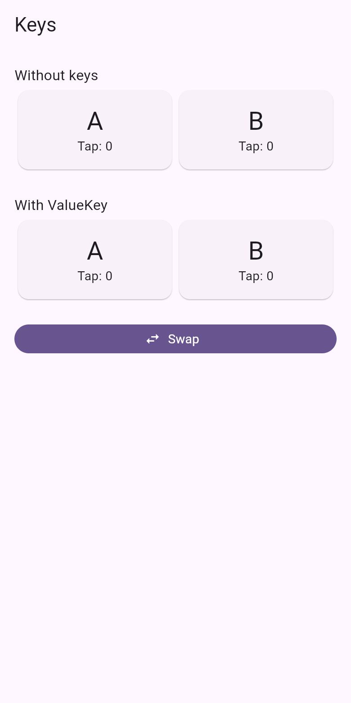
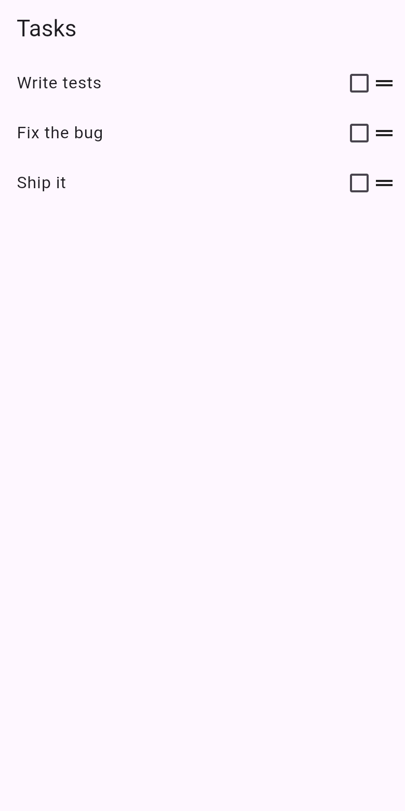
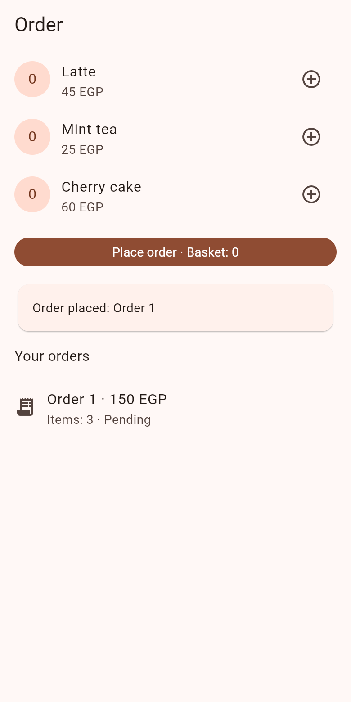
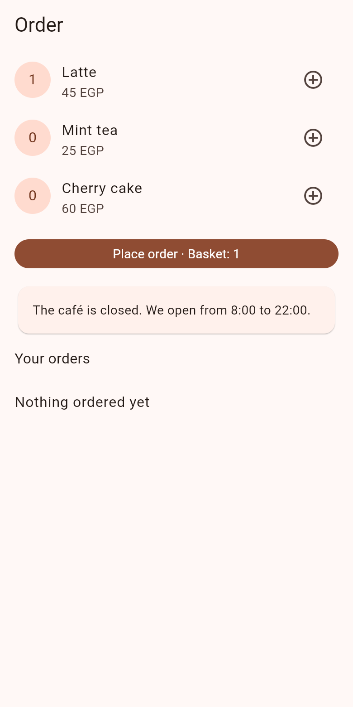
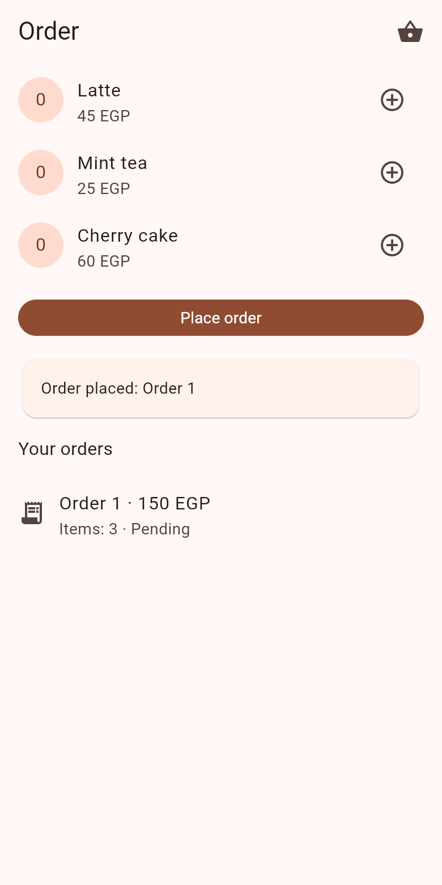
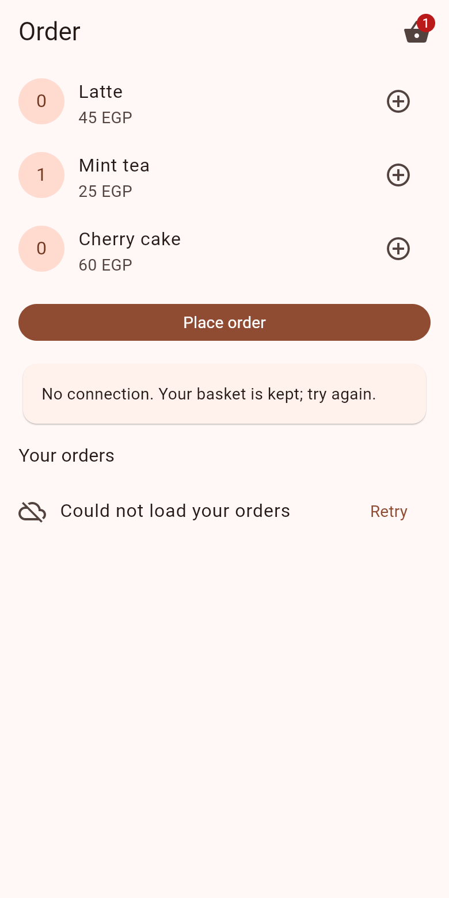
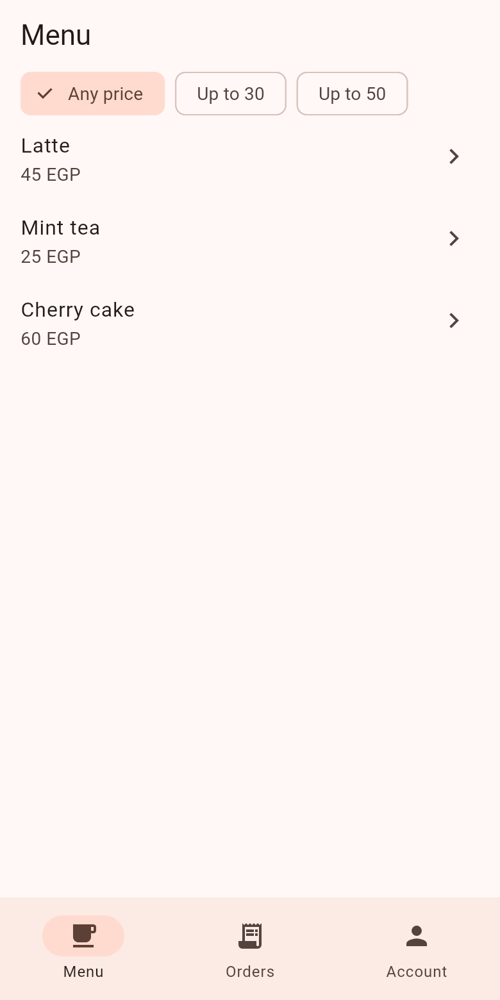
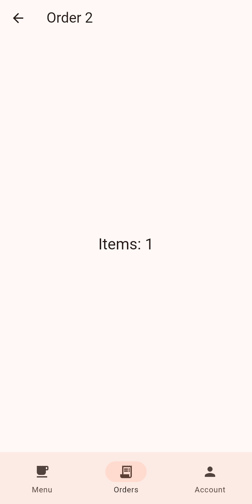
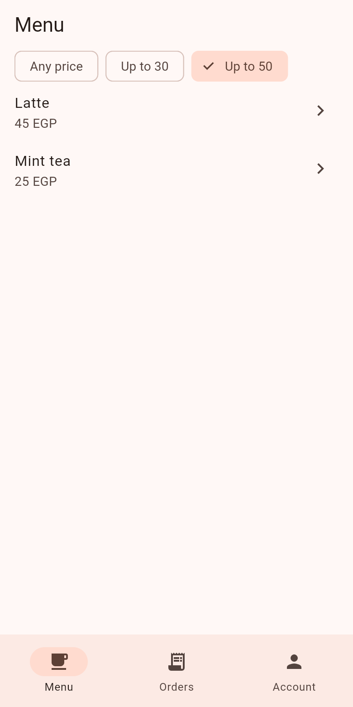

The code in this book is tested with Flutter 3.50.1 and Dart 3.14. Every listing, terminal session and screenshot is produced from the files in the book’s code repository.
Flutter, Dart, Firebase, Android and Google Play are trademarks of Google LLC. iOS, Xcode and App Store are trademarks of Apple Inc. Other names mentioned in this book are trademarks of their owners and are used for identification only.
ISBN: ———
Contents
How to Use This Book6
Part 1: Architecture
1How Flutter Really Renders9
2Clean Architecture for Flutter26
3State Management with Riverpod42
4Navigation at Scale with go_router57
5Networking, Errors and Retries72
6Offline-First Apps88
Part 2: Quality
7Design Systems in Flutter
8Animations That Feel Native
9Performance: Jank, Memory and Startup
10Testing: Unit, Widget, Golden and Integration
11Accessibility on Mobile
Part 3: Production
12Push Notifications and Background Work
13Platform Channels and Native Code
14Security on the Device
15CI/CD, Flavors and Signing
16Crash Reporting and Analytics
17Capstone: A Production App
Appendix
Answers to the Exercises102
Before you begin
How to Use This Book
You can build a Flutter app and publish it. This book is about building apps that stay good as they grow: more screens, more people working on them, more users on more kinds of phones, and more years of updates. It is written for developers who finished Flutter from Zero, the fifth book of this series, or who have shipped a Flutter app of their own. It does not explain widgets, layouts or setState again; it explains why they work the way they do, and what professionals build on top of them.
What you need
Everything from Book 5: Flutter, Visual Studio Code or Android Studio, an emulator or a phone. A Mac for the iOS parts.
A free GitHub account for the chapters on build servers, and a free Firebase project for notifications and crash reports.
Patience with tools: this book uses more packages than the last one, and each chapter says exactly which, and why.
How the book is organised
The seventeen chapters are grouped in three parts. Part I is the foundation for the rest; Parts II and III can be read in any order after it.
Architecture starts under the hood, with how Flutter turns widgets into pixels, then builds the skeleton of a large app: clean layers, state with Riverpod, navigation with go_router, a network layer that handles errors and retries, and data that works without a connection.
Quality is about how the app feels and how you know it works: a design system, animations, performance measured and fixed, every kind of test, and accessibility.
Production is about running an app in the real world: notifications and background work, native code, security, build servers that sign and publish, crash reports and analytics, and a capstone app that uses all of it.
Every chapter
Each chapter follows the pattern you know from Book 5: what you will learn; explanations built on real, running examples; a quick check; boxes with tips, traps and professional habits; common mistakes; a summary; three practice projects (easy, medium and challenge); and exercises at three levels, with answers at the end of the book. At this level the projects are closer to real work: most of them start from code that is slow, fragile or hard to test, and ask you to make it better, and prove it.
Real code, real numbers
Every listing is a real file, every terminal session was recorded while the book was made, and every screenshot is the real app. When a chapter says that a change saved forty rebuilds or a thousand paints, a test counted them. You will see the same results with the same versions:
Tool
Version
Flutter
3.50.1 (stable)
Dart
3.14.0
Packages
the exact versions are in each chapter’s pub-add transcript
Measurements of time, such as how long a frame takes, depend on the machine. Where the book shows them, it says on what it measured, and teaches you to measure on your own phone, which is what matters.
Reading the examples
A dark tab above a listing gives the file’s path in the project. Long files are shown in parts; the whole file is in the code repository.
A box with three coloured dots is a terminal: a line starting with $ is a command, the lines below are its answer.
A picture in a phone outline is a screenshot of the app.
The code repository
Every example, project and exercise answer is in the book’s code repository, with the script that produced its output. Use it to compare, or to start from a working version when you are stuck; but write the code yourself first.
A word from the author
The difference between a developer who builds apps and one who builds apps that last is rarely talent. It is knowing what happens under the code you write, and having habits that catch mistakes before people do. This book tries to give you both. Bit, the purple robot, is still here, now with a few scars from production. Welcome back.
Soliman Maged Saeed Salah
1
Chapter 1
How Flutter Really Renders
In this chapter you will learn to
see the three trees behind every screen: widgets, elements and render objects
follow one frame from setState to pixels, and know what each step costs
predict which widgets rebuild, and keep that number small with const and local state
read layout as “constraints go down, sizes go up, the parent sets the position”
use keys to keep state where it belongs, and repaint boundaries to keep painting cheap
prove all of this with tests that count builds and paints
In Book 5 you wrote widgets and Flutter drew them. That was enough to build apps. It is not enough to know why a list stutters, why a text field loses what was typed when the screen changes, or why a widget ignores the width you gave it. All three have the same answer: what Flutter does with your widgets after build returns. This chapter opens the box, and every claim in it is measured by a test.
Bit
Nothing in this chapter is a rule of thumb. Every number, from rebuilds to paints, was counted by the tests you will see, on the machine that made the book. Change the code, run the tests, and watch the numbers change.
1.1Three trees
A widget is not what you see on the screen. It is a description: a small, immutable object that says what should be there. Flutter keeps two more trees beside the widgets:
An element is a widget’s place in the live tree. It is created once, keeps its position, holds the State of a stateful widget, and is reused when a new widget of the same kind arrives at the same place.
A render object does the real work: it measures itself, positions its children, and paints. Only some widgets have one.
A test can walk the elements of a small screen and print all three, one line per element:
test/trees_test.dart (part)
final root = tester.element(find.byType(Directionality));
voidshow(Element e, int depth) {
// Only a RenderObjectElement owns a render object; the others only build widgets.final ro = e is RenderObjectElement
? '${e.renderObject.runtimeType}'
: '-';
debugPrint(
'${'' * depth}${e.widget.runtimeType} | ${e.runtimeType} | $ro',
);
e.visitChildren((child) => show(child, depth + 1));
}
show(root, 0);
Terminal
$ flutter test test/trees_test.dart
00:00 +0: loading test/trees_test.dart
00:00 +0: the three trees of a small screen
Directionality | _UbiquitousInheritedElement | -
Center | SingleChildRenderObjectElement | RenderPositionedBox
Padding | SingleChildRenderObjectElement | RenderPadding
Text | StatelessElement | -
RichText | MultiChildRenderObjectElement | RenderParagraph
00:00 +1: All tests passed!
Center and Padding are thin: each has an element and a render object that lays out one child.
Text has no render object. It is a StatelessWidget that builds a RichText, and RichText has the RenderParagraph that measures and paints the letters. Most widgets you use are like Text: they only build other widgets.
Directionality has none either: it is an inherited widget that passes a value down, as Theme and MediaQuery do.
1.2One frame
A phone’s screen asks for a new picture 60 or 120 times a second. For each one, Flutter has about 16 or 8 milliseconds, and does the same steps in order:
Animate. Every running animation moves to its value for this moment.
Build. Every element marked dirty, by setState or a changed inherited value, runs its widget’s build, and the new widgets are compared with the old ones.
Layout. Render objects whose size may have changed measure themselves and place their children.
Paint. Render objects whose look changed record what to draw, in layers.
Composite and raster. The layers go to the GPU thread, which turns them into pixels while the next frame is being built.
Each step only touches what changed. A frame where nothing changed costs almost nothing; a frame where everything changed may miss its deadline, and the person sees a stutter, called jank. The rest of this chapter is about keeping “what changed” small at each step.
1.3Who rebuilds
setState marks one element dirty. In the next frame its widget builds again, and returns new child widgets. For each child, Flutter compares the new widget with the old one at the same place:
If it is the same object, nothing below it can have changed: Flutter skips it entirely. This is what const gives you: a const widget is created once, when the app is compiled, and is the same object on every build.
If it is a different object of the same type (and the same key), the element is kept and updated, and the child builds again.
If the type or key differs, the old element and its whole subtree are thrown away and new ones are created.
The page below counts the builds of each widget on the screen itself. The page’s own state is changed three times with the filled button, and a smaller widget’s state five times with the outlined one:
lib/rebuilds.dart (part)
// const: the same object every time, so Flutter skips it.const Badge1(),
// Not const: a new object on every build of its parent, so it builds again.
Badge2(),
FilledButton(
onPressed: () => setState(() => count++),
child: Text('Add one ($count)'),
),
const Divider(height: 32),
Text(
'State pushed down',
style: Theme.of(context).textTheme.titleMedium,
),
const LocalCounter(),
Figure 1.1: After three taps on the page’s button and five on the local one.
Terminal
$ flutter test test/rebuilds_test.dart
00:00 +0: loading test/rebuilds_test.dart
00:00 +0: setState rebuilds the widget and everything new below it
{page: 4, const: 1, plain: 4, local: 6}
00:01 +1: All tests passed!
The page built four times: once at the start and once for each of its three setState calls.
const Badge1() built once. The page returned the same object each time, so Flutter never asked it to build again.
Badge2() built four times, like its parent, although nothing about it changed: a new object is a new widget.
LocalCounter built six times: once at the start, and once for each of its own five setState calls. And those five did not rebuild the page, nor the badges: state that lives low in the tree rebuilds only what is under it.
1.4Constraints go down, sizes go up
Layout in Flutter is one pass down the tree and back up. A parent gives each child constraints: a minimum and a maximum width and height. The child chooses its size inside them, and tells the parent. The parent then decides where the child goes. Three sentences explain every layout surprise:
Constraints go down. Sizes go up. The parent sets the position.
A small widget makes the constraints visible: LayoutBuilder gives its builder the constraints it received.
lib/constraints.dart (part)
String describe(BoxConstraints c) {
String range(double min, double max) => min == max
? min.toStringAsFixed(0)
: '${min.toStringAsFixed(0)}–${max.isFinite ? max.toStringAsFixed(0) : '∞'}';
return'w ${range(c.minWidth, c.maxWidth)} h ${range(c.minHeight, c.maxHeight)}';
}
// Shows the constraints this spot received from its parent.class ConstraintsLabel extends StatelessWidget {
const ConstraintsLabel({super.key});
@override
Widget build(BuildContext context) {
return LayoutBuilder(
builder: (context, constraints) => ColoredBox(
color: Theme.of(context).colorScheme.primaryContainer,
child: Padding(
padding: const EdgeInsets.all(8),
child: Text(describe(constraints), textDirection: TextDirection.ltr),
),
),
);
}
}
Figure 1.2: The same label in five places, showing what each place allowed.
A SizedBox of 300 × 56 gives tight constraints: minimum and maximum are equal, and the child has no choice.
Center loosens them: anything from zero up to the box’s size. The label then takes only what its text needs, and Center places it in the middle.
Expanded gives the child exactly the width left in the row, and the row’s height is unlimited: 0–∞.
A vertical ListView gives its children unlimited height, because a list scrolls. That is why a Column with Expanded inside a ListView fails: “as tall as possible” has no answer when the maximum is infinite.
The last one asks for a width of 100, and gets 300. Container(width: 100) is a wish, and its parent’s tight constraints win. To make it 100 wide, loosen the constraints first, with Center or Align.
1.5Keys: which element is which
Flutter keeps an element when the new widget at its place has the same type and the same key. Without keys, “its place” means its position among its siblings. That is usually right, and fails exactly when siblings of the same type move. The page below has two rows of stateful tiles, one without keys and one with a ValueKey for each label, and a button that swaps the labels:
lib/keys.dart (part)
// No key: after a swap, each State stays at its position.
Row(children: [for (final l in labels) Tile(label: l)]),
const SizedBox(height: 24),
Text('With ValueKey', style: Theme.of(context).textTheme.titleMedium),
// A key: each State follows its widget.
Row(
children: [
for (final l in labels) Tile(key: ValueKey(l), label: l),

Before
A tapped three times in each row, then swapped
In the first row the labels moved, but the counts stayed where they were: B now shows A’s three taps. Each element compared the new widget at its position, found a Tile as before, and kept its State. In the second row each key found its own element wherever it moved, and A’s three taps went with A. The test states it precisely:
test/keys_test.dart (part)
String tapsUnder(Finder label) => (tester.widget<Text>(
find.descendant(
of: find.ancestor(of: label, matching: find.byType(Column)),
matching: find.textContaining(':'),
),
)).data!;
// Without keys: A moved to the other side, but its 3 taps stayed where they were.
expect(tapsUnder(find.text('A').first), 'Tap: 0');
// With keys: the 3 taps of A moved with it.
expect(tapsUnder(find.text('A').last), 'Tap: 3');
Terminal
$ flutter test test/keys_test.dart
00:00 +0: loading test/keys_test.dart
00:00 +0: without keys the state stays behind; with keys it moves
00:00 +1: All tests passed!
1.6Paint and layers
When a render object’s look changes, it marks itself as needing paint, and the mark climbs to the nearest repaint boundary: everything under that boundary is painted again, changed or not. A spinning logo next to a static picture shows what that costs. The test counts how often the static picture is painted during sixty frames:
test/repaint_test.dart (part)
Future<int> paintsOver60Frames(
WidgetTester tester, {
requiredbool boundary,
}) async {
final painter = CountingPainter();
final picture = CustomPaint(painter: painter, size: const Size(100, 100));
await tester.pumpWidget(
Directionality(
textDirection: TextDirection.ltr,
child: Row(
children: [
picture,
// A layer of its own: repainting the spinner no longer repaints its neighbours.if (boundary)
const RepaintBoundary(child: Spinner())
elseconst Spinner(),
],
),
),
);
for (var i = 0; i < 60; i++) {
await tester.pump(const Duration(milliseconds: 16));
}
return painter.paints;
}
Terminal
$ flutter test test/repaint_test.dart
00:00 +0: loading test/repaint_test.dart
00:00 +0: a boundary stops the static painting from repainting
without a boundary: 61 paints, with one: 1
00:00 +1: All tests passed!
Without a boundary, the picture that never changes was painted sixty-one times: once at the start and once per frame, because it shares a layer with the spinner. With RepaintBoundary around the spinner, the spinner gets a layer of its own, and the picture is painted once.
1.7Seeing it on a phone
The tests in this chapter count; on a phone you watch. Run the app in profile mode, flutter run --profile, on a real device: debug mode is many times slower and its timings mean nothing. Then open DevTools from the terminal’s link:
The Performance page shows every frame as a bar, split into the build and raster threads, and marks the ones that missed their deadline.
Track widget rebuilds shows the same counts as this chapter’s page, for every widget, live.
Highlight repaints draws a coloured border that changes colour each time an area is painted: whatever keeps flashing while nothing should change is a missing boundary.
The Inspector’s layout explorer shows each widget’s constraints and size, as in Section 1.4.
Common mistakes
Mistake
What happens
Fix
Missing const
Unchanged widgets build again with every parent
const constructors, and the lint that asks for them
State high in the tree
A small change rebuilds a whole page
Move the state into the small widget that uses it
Fighting a widget’s size
Width and height that seem ignored
Check its constraints; loosen them with Center or Align
Movable items without keys
State, text and focus stay behind when items move
ValueKey of the item’s id
UniqueKey() in build
State lost on every rebuild
A key from the data, created once
Measuring in debug mode
Slow frames that are not slow in reality
flutter run --profile on a real phone
Summary
Widgets describe; elements live and hold state; render objects lay out and paint. Most widgets only build other widgets.
A frame animates, builds what is dirty, lays out and paints what changed, and rasters on another thread.
A child is skipped if it is the same object (const), updated if it has the same type and key, and replaced otherwise. State that lives low rebuilds little.
Constraints go down, sizes go up, the parent sets the position. Tight constraints win over a child’s wishes.
Keys make elements follow their widgets when siblings move. Repaint boundaries isolate what repaints often.
Count builds and paints in tests; watch them in DevTools, in profile mode, on a phone.
Quick check answers: 1. RichText (a RenderParagraph) and Padding (a RenderPadding); Text only builds a RichText. 2. Only Logo(): const Logo() is the same object as before, so Flutter skips it. 3. Its parent’s constraints are tight: minimum and maximum width are both 300, and a child must choose a size inside its constraints, whatever it asked for.
Practice projects
Each project ends with a test that counts something. Write the test first, watch it fail or print a surprising number, then change the code until the number is what you expect.
Project 1.1 · Easy
What is inside a ListTile?
Count the elements and the render objects of one ListTile, and list the render objects.
You will practise: walking elements with visitChildren, and telling which elements own render objects.
Pump a ListTile with an icon on each side and a title, inside MaterialApp and Material.
Find its element with tester.element(find.byType(ListTile)), and walk everything under it.
Count all elements, and collect e.renderObject.runtimeType for those that are RenderObjectElements.
Print both, and read the list: which render objects are there only for semantics, mouse and touch?
Hint: three of the paragraphs are not the title: icons are drawn as text, one letter of an icon font each.
Your result should look like this:
Terminal
$ flutter test test/tile_test.dart
00:00 +0: loading test/tile_test.dart
00:00 +0: a ListTile is many elements and few render objects
47 elements, 19 render objects:
RenderSemanticsAnnotations, RenderMouseRegion, RenderSemanticsAnnotations, RenderPointerListener, RenderSemanticsAnnotations, RenderPadding, RenderPadding, _RenderListTile, RenderSemanticsAnnotations, RenderExcludeSemantics, RenderConstrainedBox, RenderPositionedBox, RenderParagraph, RenderParagraph, RenderSemanticsAnnotations, RenderExcludeSemantics, RenderConstrainedBox, RenderPositionedBox, RenderParagraph
00:00 +1: All tests passed!
Project 1.2 · Medium
Reorder without losing anything
A list of tasks that can be dragged into a new order, where each task keeps its own ticked state.
You will practise:ReorderableListView, keys from the data, and driving a drag in a test.
A stateful TaskTile keeps done in its own state and shows a CheckboxListTile.
A ReorderableListView lists the tasks, each with key: ValueKey(task). onReorderItem receives the old and new index and moves the task in the list.
In a test, tick the first task, then drag it to the end: startGesture on it, wait for the long press, move it down, and release.
Check that the first task is now last, and still ticked. Then remove the key and watch the test fail.
Hint:ReorderableListView insists on keys and throws without them, but it cannot check that they come from the data: ValueKey(index) would pass its check and still lose the ticks.
Your result should look like this:

Project 1.2: drag a task to move it.
Terminal
$ flutter test test/reorder_test.dart
00:00 +0: loading test/reorder_test.dart
00:00 +0: reordering keeps the state of each task
00:01 +1: All tests passed!
Project 1.3 · Challenge
A repaint budget
A dashboard with a header, a chart, a footer and a live clock. Write a test that fails if anything but the clock repaints while the clock runs, then fix the dashboard.
You will practise: counting paints with CustomPainter, writing tests as budgets, and fixing with a measured RepaintBoundary.
Give each static part a painter that counts its paints in a shared map, and give the clock a painter that repaints on every tick.
Pump the dashboard, run thirty frames, and expect every count except the clock’s to be 1. Make the failure message print the counts.
Run it: it fails, and says how much was repainted.
Wrap the clock, and only the clock, in a RepaintBoundary, and run it again.
Hint: a test like this is a budget: it does not check that the app looks right, it checks that it stays cheap. Keep it, and the next person who moves the clock will learn about the boundary from the failing test, not from users.
Your result should look like this (before, then after the fix):
$ flutter test test/budget_test.dart
00:00 +0: loading test/budget_test.dart
00:00 +0: the clock repaints only itself
{header: 1, chart: 1, clock: 31, footer: 1}
00:00 +1: All tests passed!
Exercises
Easy Add an Icon and a SizedBox to the trees test. Before you run it, write down which lines will have a render object.
Easy In the rebuilds page, make Badge2’s constructor const but keep calling it without const. How many times does it build now, and why?
Medium Put a Column with an Expanded child inside a vertical ListView. Read the error, explain it with the constraints from Section 1.4, and fix it in two different ways.
Medium Give the tiles in the keys page a TextField instead of a counter, type in one, and swap. What happens to the text in each row, and to the keyboard focus?
Challenge Move the RepaintBoundary in the repaint test from the spinner to the static picture. Predict the count, then run it. When is each placement the better one?
Answers to the exercises are at the end of the book and in the book’s code repository.
Coming up in Chapter 2
You know how Flutter draws one screen. A real app has fifty, and a team working on them. The next chapter gives the app a skeleton that grows: layers for data, domain and presentation, with rules about who may talk to whom.
2
Chapter 2
Clean Architecture for Flutter
In this chapter you will learn to
split a feature into three layers, domain, data and presentation, and say what belongs in each
follow the dependency rule: the domain knows nothing about Flutter, JSON or the network
model what can go wrong as types, with a sealed Result and sealed failures
wire everything in one composition root, and run the same app wired three ways
test each layer alone, and guard the rule itself with a test that reads the imports
The notes app of Book 5 had layers already: a note, a store, a model, the screens. That was enough for one feature written by one person. A real app has twenty features, a team, a server that changes its JSON, and rules that change every quarter. This chapter gives that kind of app its skeleton: the layers professional Flutter teams use, the one rule that holds them together, and a test that makes sure nobody breaks it, not even you on a Friday evening.
Bit
The example is one feature, ordering at the café, built in full: three layers, three apps that differ only in their wiring, eight tests, and one test that fails on purpose, so that you can see what it catches.
2.1Three layers and one rule
The domain is what the app is about: entities (an order, an amount of money), the rules (an order cannot be empty; the café closes at ten), and the actions people can take, called use cases. It is plain Dart.
The data layer knows where things come from: JSON, HTTP, a database. It translates that world into the domain’s entities.
The presentation layer is the screens and the objects that hold their state. It shows entities and calls use cases.
And one rule, the dependency rule: imports point toward the domain, never away from it.
presentation ──▶ domain ◀── data
▲
(knows no Flutter, no JSON, no HTTP)
The domain defines what it needs, for example “something that can place an order”, as an interface. The data layer implements it. The presentation receives it. Nobody in the domain ever writes import 'package:http/...', so when the server changes, the rules do not; when the screens are redesigned, the rules do not; and the rules can be tested in milliseconds, without a phone or a network.
Large apps organise folders by feature first, then by layer, so that everything about orders lives together:
lib/
core/result.dart shared by every feature
features/orders/
domain/ money, order, failures, orders_repository, place_order
data/ order_dto, orders_source, orders_repository_impl
presentation/ orders_controller, orders_page
orders_app.dart the composition root
2.2The domain
Things go wrong: the basket is empty, the café is closed, the network is down. Exceptions hide that from the function’s type, and the screen finds out at run time. In the domain, a use case returns a result instead, which is either a value or a failure:
lib/core/result.dart
// A result is either a value or a failure; the type says which, and switch must handle both.sealedclass Result<T, F> {
const Result();
}
finalclass Ok<T, F> extends Result<T, F> {
const Ok(this.value);
final T value;
}
finalclass Err<T, F> extends Result<T, F> {
const Err(this.failure);
final F failure;
}
And the failures are types too, with no words in them: what to say about a failure, in which language, is the screen’s business.
lib/features/orders/domain/failures.dart (part)
// Everything that can go wrong, as types. No text: words belong to the screen.sealedclass OrderFailure {
const OrderFailure();
}
finalclass EmptyOrder extends OrderFailure {
const EmptyOrder();
}
finalclass TooLarge extends OrderFailure {
const TooLarge(this.max);
finalint max;
}
Because both are sealed, every switch over them must handle every case, and the compiler checks it. Add a fifth failure next year, and every screen that forgot it stops compiling until it says something about it.
The domain needs to place orders somewhere, but must not know how. It says what it needs as an interface, a port:
// What the domain needs from the outside world. The data layer will provide it.abstractinterfaceclass OrdersRepository {
Future<Result<Order, OrderFailure>> place(List<OrderLine> lines);
Future<List<Order>> history();
}
// One action of the app, with its rules. It knows the repository only by its interface.class PlaceOrder {
PlaceOrder(this.repository, {DateTime Function()? clock})
: clock = clock ?? DateTime.now;
final OrdersRepository repository;
final DateTime Function() clock;
staticconst maxItems = 20;
Future<Result<Order, OrderFailure>> call(List<OrderLine> lines) async {
// The rules, in order: cheapest checks first, the network last.final items = lines.fold(0, (sum, line) => sum + line.quantity);
if (items == 0) {
returnconst Err(EmptyOrder());
}
if (items > maxItems) {
returnconst Err(TooLarge(maxItems));
}
final hour = clock().hour;
if (hour < 8 || hour >= 22) {
returnconst Err(Closed());
}
return repository.place(lines);
}
}
call makes the object callable like a function: await placeOrder(lines).
The clock is given, as in Book 5: the test decides what time it is.
The rules run before the network. A closed café is told so at once, without a request that the server would refuse anyway.
The test needs no Flutter, no server and no screen. A fake repository records what reached it:
test/domain/place_order_test.dart (part)
void main() {
test('placing an order follows the rules, in order', () async {
final repo = FakeRepository();
var hour = 10;
final place = PlaceOrder(repo, clock: () => DateTime(2026, 11, 22, hour));
final latte = OrderLine(menu.first, 2);
expect(
await place([]),
isA<Err<Order, OrderFailure>>().having(
(e) => e.failure,
'failure',
isA<EmptyOrder>(),
),
);
expect(
(await place([OrderLine(menu.first, 21)]) as Err).failure,
isA<TooLarge>(),
);
hour = 23;
expect((await place([latte]) as Err).failure, isA<Closed>());
expect(repo.placed, isEmpty);
hour = 10;
final ok = await place([latte]) as Ok<Order, OrderFailure>;
expect(ok.value.total.pounds, 90);
expect(repo.placed, hasLength(1));
});
}
Terminal
$ flutter test test/domain/place_order_test.dart
00:00 +0: loading test/domain/place_order_test.dart
00:00 +0: placing an order follows the rules, in order
00:00 +1: All tests passed!
The last expect before the success matters as much as the others: after three refusals, the repository received nothing. The rules really run first.
2.3The data layer
The server speaks JSON, with its own names: placed_at, statuses as text, items as a map. A DTO, a data transfer object, mirrors exactly that shape, and nothing more:
lib/features/orders/data/order_dto.dart (part)
// The shape of the data on the wire. It changes when the server changes; the entity does not.class OrderDto {
const OrderDto({
requiredthis.id,
requiredthis.items,
requiredthis.status,
requiredthis.placedAt,
});
factory OrderDto.fromJson(Map<String, dynamic> json) => OrderDto(
id: json['id'] asint,
items: (json['items'] asMap<String, dynamic>).map(
(k, v) => MapEntry(k, v asint),
),
status: json['status'] asString,
placedAt: json['placed_at'] asString,
);
finalint id;
finalMap<String, int> items;
finalString status;
finalString placedAt;
}
The repository implementation turns DTOs into entities, and anything that goes wrong into a failure:
class OrdersRepositoryImpl implements OrdersRepository {
OrdersRepositoryImpl(this.source);
final OrdersSource source;
@override
Future<Result<Order, OrderFailure>> place(List<OrderLine> lines) async {
try {
final json = await source.post({
for (final l in lines) l.item.id: l.quantity,
});
return Ok(_toOrder(OrderDto.fromJson(json)));
} catch (_) {
// Any failure of the source becomes a NetworkFailure: the domain never sees an exception.returnconst Err(NetworkFailure());
}
}
@override
Future<List<Order>> history() async => [
for (final json inawait source.list()) _toOrder(OrderDto.fromJson(json)),
];
Order _toOrder(OrderDto dto) => Order(
id: dto.id,
lines: [
for (final MapEntry(:key, :value) in dto.items.entries)
OrderLine(menu.firstWhere((m) => m.id == key), value),
],
status: OrderStatus.values.byName(dto.status),
placedAt: DateTime.parse(dto.placedAt),
);
}
The source behind it is another interface: here a fake that answers after 400 milliseconds, as a network would; in Project 2.2, a real HTTP client. The repository and the domain do not change between the two.
Terminal
$ flutter test test/data/orders_repository_test.dart
00:00 +0: loading test/data/orders_repository_test.dart
00:00 +0: the repository turns data into entities, and errors into failures
00:00 +1: All tests passed!
2.4The presentation
The controller holds the screen’s state, calls the use case, and turns each failure into words in the person’s language:
Future<void> place() async {
placing = true;
notifyListeners();
final result = await placeOrder([
for (final e in basket.entries) OrderLine(e.key, e.value),
]);
switch (result) {
case Ok(:final value):
basket.clear();
message = 'Order placed: Order ${value.id}';
history = await repository.history();
case Err(:final failure):
message = describe(failure);
}
placing = false;
notifyListeners();
}
// Each failure, in the person's language.staticString describe(OrderFailure failure) => switch (failure) {
EmptyOrder() => 'Add something to your basket first.',
TooLarge() => 'One order can hold at most 20 items.',
Closed() => 'The café is closed. We open from 8:00 to 22:00.',
NetworkFailure() => 'No connection. Your basket is kept; try again.',
};
}
The page only watches the controller and draws. The same page, the same controller and the same use case give three different screens, depending only on what they were given:

At 10:00: placed

At 23:00: closed
No network
Terminal
$ flutter test test/presentation/orders_page_test.dart
00:00 +0: loading test/presentation/orders_page_test.dart
00:00 +0: the page shows the placed order, or the failure in words
00:01 +1: All tests passed!
2.5The composition root
Somewhere, someone must know every concrete class: which source, which repository, which clock. That place is the composition root, normally main, and it is the only one:
lib/orders_app.dart (part)
// The composition root: the only place that knows every concrete class.void main() {
final repository = OrdersRepositoryImpl(FakeOrdersSource());
final placeOrder = PlaceOrder(
repository,
clock: () => DateTime(2026, 11, 22, 10),
);
runApp(
ChangeNotifierProvider(
create: (context) => OrdersController(placeOrder, repository),
child: MaterialApp(
debugShowCheckedModeBanner: false,
theme: ThemeData(colorSchemeSeed: Colors.brown),
home: const OrdersPage(),
),
),
);
}
The three screens above are three composition roots, orders_app.dart, orders_closed.dart and orders_offline.dart, which differ in one line each: the clock, or the source. In a real app the same idea gives you a demo build with fake data, a staging build against a test server, and a production build, from the same code.
2.6Guarding the rule
Rules that live only in people’s heads are broken within a month: someone needs a colour in the domain “just for now”, and imports Flutter. A test can read the imports of every domain file, and fail when one points the wrong way:
test/architecture_test.dart (part)
const forbidden = [
'package:flutter/',
'package:material_ui/',
'package:provider/',
'package:http/',
'/data/',
'/presentation/',
];
/// Every import in a domain folder that breaks the rule, as "file: import".List<String> violations(String root) => [
for (final file in Directory(
root,
).listSync(recursive: true).whereType<File>())
if (file.path.contains('/domain/') && file.path.endsWith('.dart'))
for (final line in file.readAsLinesSync())
if (line.startsWith('import ') && forbidden.any(line.contains))
'${file.path}: $line',
];
void main() {
test('the domain imports no Flutter, no data and no presentation', () {
// The domain imports only Dart and other domain files.
expect(violations('lib/features'), isEmpty);
});
}
Terminal
$ flutter test test/architecture_test.dart
00:00 +0: loading test/architecture_test.dart
00:00 +0: the domain imports no Flutter, no data and no presentation
00:00 +1: All tests passed!
To see it catch something, the same check runs on a folder of examples that contains one bad domain file, a function that picks a Color for each status:
Terminal
$ flutter test test/architecture_bad_test.dart
00:00 +0: loading test/architecture_bad_test.dart
00:00 +0: a domain file that imports Flutter is caught
00:00 +0 -1: a domain file that imports Flutter is caught [E]
Expected: empty
Actual: [
'test/fixtures/orders/domain/status_color.dart: import \'package:material_ui/material_ui.dart\';'
]
The failure names the file and the import. The fix is to move statusColor to the presentation layer, where colours belong, and keep only OrderStatus in the domain.
Common mistakes
Mistake
What happens
Fix
Flutter or JSON in the domain
Rules that cannot be tested or reused without a phone
Plain Dart in the domain; an architecture test
Error messages in the domain
Rules tied to one language and one screen
Failures as types; words in the presentation
Throwing exceptions across layers
Screens that crash on cases nobody listed
A sealed Result with sealed failures
new HttpClient() inside a repository
Nothing can be faked in a test
Receive the source in the constructor; wire it in the root
Concrete classes chosen in many places
Changing a source means hunting through the app
One composition root
Every layer for every screen
Many files with no rule in them
Add layers where they carry rules or shapes
Summary
Domain (entities, rules, use cases, ports), data (DTOs, sources, repository implementations), presentation (controllers, screens).
Imports point toward the domain; the domain is plain Dart.
Use cases return a sealed Result; failures are sealed types without words, and the screen chooses the words.
One composition root chooses every concrete class; different roots give demo, test and production apps from the same code.
Test each layer alone with fakes, and enforce the dependency rule with a test that reads the imports.
Quick check answers: 1. The rule belongs in the domain (in PlaceOrder); the text belongs in the presentation (in describe), in each language. 2. So that it works with any implementation, the fake in the tests, an in-memory one, or HTTP, and never needs to import the data layer. 3. Every switch over OrderFailure that does not handle it would stop compiling, starting with the controller’s describe, until someone decides what to tell the person.
Practice projects
The three projects grow the orders feature without touching the files you have: a new use case, a new data source, and a new architecture rule. If one of them forces you to change an existing layer, ask why before you do.
Project 2.1 · Easy
Cancel an order
A use case that cancels an order only if it is still pending and was placed less than five minutes ago.
You will practise: a use case with its own sealed failures, a clock, and the edges of a time window.
Define sealed class CancelFailure with NotPending and TooLate.
Write CancelOrder with a clock, and a call(Order) that returns Result<Order, CancelFailure>: a copy of the order with OrderStatus.cancelled, or a failure.
Test four cases: pending at two minutes, ready at two minutes, pending at exactly five minutes, and pending at six.
Hint: decide, and test, what happens exactly at the edge. Here five minutes is still allowed (>, not >=); write it in the test so the next person does not have to guess.
Your result should look like this:
Terminal
$ flutter test test/domain/cancel_order_test.dart
00:00 +0: loading test/domain/cancel_order_test.dart
00:00 +0: an order can be cancelled only while pending, within five minutes
00:00 +1: All tests passed!
Project 2.2 · Medium
A real HTTP source
Implement OrdersSource with the http package, and prove that the repository and the domain work with it unchanged.
You will practise: implementing a data-layer interface, status codes, and MockClient from Book 5.
HttpOrdersSource receives an http.Client and a base address. post sends the items as JSON, with a timeout, and throws if the status is not 201.
Test through the repository with a MockClient server that accepts mint tea and refuses cake with 409.
Check that the tea order arrives as an Order with the right total, and that the refusal arrives as a NetworkFailure.
Hint: a 409 “sold out” is not really a network failure. When the server starts sending reasons, add a failure SoldOut to the domain, map it in the repository, and let the compiler show you every screen that must now explain it.
Your result should look like this:
Terminal
$ flutter test test/data/http_orders_source_test.dart
00:00 +0: loading test/data/http_orders_source_test.dart
00:00 +0: the HTTP source maps answers and errors
00:00 +1: All tests passed!
Project 2.3 · Challenge
Features that keep to themselves
A second architecture rule: a feature may import another feature’s domain, but never its data or presentation.
You will practise: reading imports with regular expressions, relative paths, and testing a test with fixtures.
For each Dart file under lib/features, find its feature from the path, features/<name>/.
For each import, find the feature and layer it points to, both for package: imports and for relative ones like '../../orders/presentation/...'.
Report it when the feature is another one and the layer is not domain.
Expect no reports in lib/features, and exactly one in a fixture folder with a menu feature that imports both the orders domain (allowed) and the orders controller (not allowed).
Hint: testing the rule against a fixture that breaks it is what proves the rule works. A check that has never failed may simply be looking in the wrong place.
Your result should look like this:
Terminal
$ flutter test test/features_test.dart
00:00 +0: loading test/features_test.dart
00:00 +0: features talk to each other only through their domain
00:00 +1: All tests passed!
Exercises
Easy Sort these into domain, data or presentation: OrderDto, “an order holds at most 20 items”, Colors.green for ready orders, Money, the text “Order placed”, jsonDecode.
Easy Add the failure SoldOut to failures.dart and run flutter analyze. Where does it complain, and what does that tell you?
Medium Write a fourth composition root, orders_demo.dart, whose source starts with three orders in its history, for showing the app to someone without a server.
MediumMoney holds whole pounds. Change it to hold piastres (hundredths) without changing any file outside the domain. Which files change, and why so few?
Challenge The controller in this chapter is a ChangeNotifier, which comes from Flutter. Is the presentation layer allowed to depend on Flutter? Could the controller be plain Dart, and what would you gain and lose? (The next chapter answers with Riverpod.)
Answers to the exercises are at the end of the book and in the book’s code repository.
Coming up in Chapter 3
This chapter wired everything by hand in main, and passed the controller down with Provider. The next chapter replaces both with Riverpod: providers that build each other, state that can be loading, ready or failed, and every dependency replaceable in tests with one line.
3
Chapter 3
State Management with Riverpod
In this chapter you will learn to
declare dependencies and state as providers, and let them build each other
hold changing state in a Notifier, as immutable values
load data with FutureProvider, and show every state of an AsyncValue
run actions with an AsyncNotifier, and refresh what they made stale
rebuild only what changed with select, and know when Riverpod retries for you
replace any dependency, in tests and in different builds, with one override
Chapter 2 wired the orders feature by hand in main and handed a ChangeNotifier to the screen with Provider. It works, and it has three weak points that grow with the app: dependencies are passed by hand through constructors, a missing provider is found only when the screen opens, and every loading or error state is written by hand. Riverpod answers all three. This chapter keeps Chapter 2’s domain and data layers exactly as they were, and rewrites only the presentation.
Bit
The domain and data files of this chapter are copied unchanged from Chapter 2 by the script that builds the examples. If Riverpod had needed a change in them, the layers of Chapter 2 would have been wrong.
3.1Providers
A provider is a declaration: “here is how to make this value”. It is a top-level constant, so any code can name it, and the compiler checks the name and the type. The values themselves do not live in the providers; they live in a container, which creates each one the first time it is asked for, and keeps it. In an app the container is a ProviderScope at the root; in a test, a ProviderContainer.
The feature’s dependencies become providers too. Each one builds itself from the others with ref.watch:
lib/features/orders/providers.dart (part)
// The feature's wiring: the only file of the feature that knows the data layer.// Dependencies are providers too: the app reads them, tests replace them.final clockProvider = Provider<DateTime Function()>((ref) => DateTime.now);
final ordersSourceProvider = Provider<OrdersSource>(
(ref) => FakeOrdersSource(),
);
// Providers build each other: change the source, and everything above it is rebuilt.final ordersRepositoryProvider = Provider<OrdersRepository>(
(ref) => OrdersRepositoryImpl(ref.watch(ordersSourceProvider)),
);
final placeOrderProvider = Provider<PlaceOrder>(
(ref) => PlaceOrder(
ref.watch(ordersRepositoryProvider),
clock: ref.watch(clockProvider),
),
);
// Loading, ready or failed: FutureProvider gives the screen an AsyncValue.final historyProvider = FutureProvider<List<Order>>(
(ref) => ref.watch(ordersRepositoryProvider).history(),
);
This file replaces the hand wiring of Chapter 2’s main. It is the only file of the feature that knows the data layer; the screens see providers that give domain types.
ref.watch records a dependency. If ordersSourceProvider is replaced, the repository, the use case and the history above it are rebuilt automatically.
Nothing is created until someone asks: a screen that never shows the history never loads it.
3.2State that changes: Notifier
The basket changes as the person taps. A Notifier holds it, with the methods that change it:
class BasketNotifier extends Notifier<Map<MenuItem, int>> {
@override
Map<MenuItem, int> build() => const {};
// A new map every time: Riverpod notifies when state is a different object.void add(MenuItem item) => state = {...state, item: (state[item] ?? 0) + 1};
void clear() => state = const {};
}
final basketProvider = NotifierProvider<BasketNotifier, Map<MenuItem, int>>(
BasketNotifier.new,
);
// Derived state: recomputed only when the basket changes.final basketCountProvider = Provider<int>(
(ref) => ref.watch(basketProvider).values.fold(0, (a, b) => a + b),
);
build returns the first state. state = … replaces it and notifies everything that watches it.
The state is never changed in place. add builds a new map; writing state[item] = 1 would change the old map, and Riverpod, comparing the old state with the “new” one, would see the same object and tell nobody.
basketCountProvider is derived state: a provider that watches another and computes from it. It is recomputed only when the basket changes, and the screens that need only the count watch only the count.
3.3Data that loads: AsyncValue
historyProvider is a FutureProvider. Whoever watches it receives an AsyncValue: loading, data, or an error, and sometimes both at once, such as old data while new data loads. A switch with patterns covers every case, and the compiler checks that it does:
// Every state of the history, in one switch.
...switch (history) {
AsyncValue(:final value?) when value.isEmpty => [
const ListTile(title: Text('Nothing ordered yet')),
],
AsyncValue(:final value?) => [
for (final order in value)
ListTile(
leading: const Icon(Icons.receipt_long),
title: Text('Order ${order.id} · ${order.total.pounds} EGP'),
subtitle: Text(
'Items: ${order.items} · ${statusNames[order.status]}',
),
),
],
AsyncValue(hasError: true) => [
ListTile(
leading: const Icon(Icons.cloud_off),
title: const Text('Could not load your orders'),
trailing: TextButton(
onPressed: () => ref.invalidate(historyProvider),
child: const Text('Retry'),
),
),
],
_ => [
const Padding(
padding: EdgeInsets.all(16),
child: Center(child: CircularProgressIndicator()),
),
],
},
The order of the cases matters. Data first: if there is any, show it, even while a refresh is running. Then the error. The spinner only when there is nothing else to show.
Riverpod 3 also retries a provider that fails, waiting a little longer each time. While it retries, the value is still loading, but carries the error. The test shows both behaviours with a source that always fails:
test/retry_test.dart (part)
test('a failing provider is retried, unless retries are turned off', () async {
final offline = ordersSourceProvider.overrideWithValue(
FakeOrdersSource(fails: true),
);
final retrying = ProviderContainer.test(overrides: [offline]);
debugPrint(
'default: ${await historyAfter(retrying, const Duration(milliseconds: 600))}',
);
final once = ProviderContainer.test(
overrides: [offline],
retry: (count, error) => null,
);
debugPrint(
'no retries: ${await historyAfter(once, const Duration(milliseconds: 600))}',
);
expect(once.read(historyProvider).isLoading, isFalse);
});
Terminal
$ flutter test test/retry_test.dart
00:00 +0: loading test/retry_test.dart
00:00 +0: a failing provider is retried, unless retries are turned off
default: error: Exception: connection refused, still loading: true
no retries: error: Exception: connection refused, still loading: false
00:01 +1: All tests passed!
3.4Actions: AsyncNotifier
Placing an order takes time and can fail. An AsyncNotifier holds its state, loading or a result, and the method that runs it:
// Placing an order: loading while it runs, then the result.class PlaceController extends AsyncNotifier<Outcome?> {
@override
Future<Outcome?> build() async => null;
Future<void> place() async {
state = const AsyncLoading();
final lines = [
for (final e in ref.read(basketProvider).entries)
OrderLine(e.key, e.value),
];
final result = await ref.read(placeOrderProvider)(lines);
// The screen may have closed while waiting.if (!ref.mounted) {
return;
}
if (result is Ok) {
ref.read(basketProvider.notifier).clear();
// The history is stale now: throw it away, and it loads again for whoever watches it.
ref.invalidate(historyProvider);
}
state = AsyncData(result);
}
}
final placeControllerProvider =
AsyncNotifierProvider<PlaceController, Outcome?>(PlaceController.new);
Inside methods, ref.read takes a value once. ref.watch belongs in build, where a change should rebuild.
After the await, ref.mounted says whether the provider is still alive; if the screen was closed meanwhile, there is nobody to tell.
ref.invalidate(historyProvider) throws the history away. Whoever watches it receives a loading state, then the new list with the order just placed. No screen had to be told to refresh.

Placed: the history reloaded by itself
One override: 23:00

One override: offline
3.5Rebuild only what changed
A widget that watches the whole basket rebuilds whenever anything in it changes. Often it needs much less: the Place button only needs to know whether the basket is empty. select watches one value computed from a provider, and rebuilds only when that value changes. The test adds three items and counts the builds of two widgets:
$ flutter test test/select_test.dart
00:00 +0: loading test/select_test.dart
00:00 +0: select rebuilds only when the selected value changes
{whole basket: 4, select isEmpty: 2}
00:00 +1: All tests passed!
Four builds for the whole basket, once at the start and once per item. Two for isEmpty: at the start, and when the basket stopped being empty. The basket badge in the bar does the same with a provider: it watches basketCountProvider, not the basket.
3.6One override
Because every dependency is a provider, any of them can be replaced at the root of a container, with overrides. The three screens above are the same app, and differ only in this:
In a test, the same line runs the rules without a network. The source counts what reached it: nothing, because the café was closed, and the basket was kept for later:
$ flutter test test/override_test.dart
00:00 +0: loading test/override_test.dart
00:00 +0: one override, and the rules run without the network
00:00 +1: All tests passed!
And the whole screen, tapped as a person would, with the history refreshing itself after the order:
Terminal
$ flutter test test/page_test.dart
00:00 +0: loading test/page_test.dart
00:00 +0: adding, placing, and the history refreshed
00:01 +1: All tests passed!
Common mistakes
Mistake
What happens
Fix
ref.read in build
The widget never updates
ref.watch in build; read in callbacks
ref.watch in a callback
Rebuilds and subscriptions in the wrong place
ref.read in callbacks and methods
Changing state in place
Nobody is notified
Assign a new value to state
Only a spinner while hasError
The person waits forever during retries
Show the error and a Retry button
Refreshing screens by hand after an action
Forgotten screens show stale data
ref.invalidate the provider that became stale
A provider created inside build
A new provider, and lost state, on every build
Top-level providers; family for parameters
Summary
Providers are top-level declarations; values live in a container (ProviderScope, ProviderContainer) and are created on first use.
Dependencies are providers that ref.watch each other; one file per feature wires them.
Notifier holds changing state as immutable values; derived providers compute from it.
FutureProvider and AsyncNotifier give AsyncValue: switch on data, error and loading, in that order. Riverpod retries failures unless told not to.
select and derived providers rebuild only what changed; ref.invalidate refreshes what an action made stale.
Overrides replace any dependency, in one line, for tests and for different builds.
Quick check answers: 1. ref.watch in build methods (of widgets and providers), where a change should rebuild; ref.read in callbacks and notifier methods, to use a value once. 2. Because Riverpod notifies when state becomes a different object; changing the same map in place leaves it the same object, so nobody would be told. 3. A value that is still loading but carries the error, so the screen can show the error and a Retry button instead of a spinner.
Practice projects
Each project adds a Riverpod tool the chapter only mentioned. The tests are the point: each one proves the behaviour the tool promises.
Project 3.1 · Easy
One provider per order
A provider that gives one order by its id, built from the history, and cached per id.
You will practise:FutureProvider.family, ref.watch of another provider’s future, and caching.
Inside, await ref.watch(historyProvider.future) and return the order with that id, or null (firstWhereOrNull from the collection package).
In a test, place two orders, read orderProvider(1) and orderProvider(2), check their totals, check that id 3 gives null, and that reading id 1 again gives the very same object.
Hint: because orderProvider watches the history, invalidating the history after a new order refreshes every order provider too. Nothing has to remember to update them.
Your result should look like this:
Terminal
$ flutter test test/family_test.dart
00:00 +0: loading test/family_test.dart
00:00 +0: each order id has its own provider, cached
00:01 +1: All tests passed!
Project 3.2 · Medium
A search that cancels itself
Search the menu as the person types, without searching for every letter.
You will practise:autoDispose, family, ref.onDispose, and a debounce without a timer.
A Notifier holds the query; the text field’s onChanged sets it.
searchProvider is FutureProvider.autoDispose.family on the query. It registers ref.onDispose, waits 300 milliseconds, and searches only if it was not disposed meanwhile.
Typing a new letter makes the page watch a new query: the old one has no watcher left, is disposed, and never searches.
Test by typing three letters 100 milliseconds apart, and check that only the empty query and the last one were searched.
Hint: this is Book 5’s debounce without a Timer to cancel: autoDispose does the cancelling. For a real network request, also cancel the request in onDispose, so that it does not finish uselessly.
Your result should look like this:
Project 3.2: one search, for the last text.
Terminal
$ flutter test test/search_test.dart
00:00 +0: loading test/search_test.dart
00:00 +0: only the last query is searched
00:01 +1: All tests passed!
Project 3.3 · Challenge
Undo, for free
A basket that can undo any number of changes, one at a time.
You will practise: immutable state, a history of states in a notifier, and container.listen in tests.
Every change goes through one private method that pushes the current state onto a list, then sets the new one.
undo pops the last state back; canUndo says whether there is one.
Test a sequence: add, add, add, remove; then undo four times, checking the basket after each, and that eight states were announced.
Hint: this only works because states are never changed in place: each old map is still exactly what it was. With a mutable basket, the “history” would be four references to the same, latest map.
Your result should look like this:
Terminal
$ flutter test test/undo_test.dart
00:00 +0: loading test/undo_test.dart
00:00 +0: undo goes back one state at a time
00:00 +1: All tests passed!
Exercises
Easy Change BasketNotifier.add to change the map in place (state[item] = …). Which tests fail, and what does the screen do when you tap?
Easy Remove ref.invalidate(historyProvider) from place. What does the page show after an order, and when does it catch up?
Medium Show a snack bar when an order is placed, using ref.listen in the page’s build. Why listen and not watch?
Medium Turn off retries for historyProvider only, with its retry parameter, and check the offline screen. When would you choose that in a real app?
Challenge Write a fourth composition root that overrides historyProvider itself with three fixed orders. What does that skip that overriding the source does not?
Answers to the exercises are at the end of the book and in the book’s code repository.
Coming up in Chapter 4
The orders feature lives on one screen. A real app has dozens, with links into them from notifications and the web, a back button that must make sense, and screens that only signed-in people may open. The next chapter does it with go_router.
4
Chapter 4
Navigation at Scale with go_router
In this chapter you will learn to
describe every screen of an app as an address, in one router
open any screen directly from a link, with a back button that makes sense
keep tabs alive, each with its own stack of pages
protect screens with a redirect that returns people where they wanted to go, and only inside the app
handle addresses that do not exist, and changes that should not be lost
Book 5 moved between screens with Navigator.push: “now show this page on top”. That works until the app has to open a screen from outside: a notification about order 2, a link in a message, the address bar of a browser, a phone restoring the app after a restart. Each of those arrives as an address, not as a push, and the app must build the right stack of pages for it. This chapter makes the address the source of truth, with go_router, the router maintained by the Flutter team.
Bit
The screenshots in this chapter were taken by opening the app at an address, such as #/orders/2, exactly as a link from outside would, instead of tapping through it.
First, all the addresses, in one place. Screens build links with these functions and never by joining text, so a renamed path is changed once, and a query value is always encoded:
lib/cafe/routes.dart
// Every address in one place: links build them here, and never by hand.abstractfinalclass Routes {
staticconst menu = '/menu';
staticconst orders = '/orders';
staticconst account = '/account';
staticconst edit = '/account/edit';
staticString drink(String id) => '/menu/$id';
staticString order(int id) => '/orders/$id';
staticString menuUpTo(int max) =>
Uri(path: menu, queryParameters: {'max': '$max'}).toString();
staticString signIn({requiredString from}) =>
Uri(path: '/signin', queryParameters: {'from': from}).toString();
}
Then the router: a tree of routes, each with its path and the page it builds. The structure of the tree is the structure of the app:
lib/cafe/router.dart (part)
routes: [
// Three tabs, each with its own stack of pages, kept alive when you switch.
StatefulShellRoute.indexedStack(
builder: (context, state, shell) => TabsScaffold(shell: shell),
branches: [
StatefulShellBranch(
routes: [
GoRoute(
path: Routes.menu,
builder: (context, state) => MenuPage(
max: int.tryParse(state.uri.queryParameters['max'] ?? ''),
),
routes: [
// A child route: /menu/latte sits on top of /menu, so the back button returns to the menu.
GoRoute(
path: ':id',
builder: (context, state) =>
DrinkPage(id: state.pathParameters['id']!),
),
],
),
],
),
StatefulShellBranch(
routes: [
GoRoute(
path: Routes.orders,
builder: (context, state) => const OrdersPage(),
routes: [
GoRoute(
path: ':id',
builder: (context, state) =>
OrderPage(id: int.tryParse(state.pathParameters['id']!)),
),
],
),
],
),
StatefulShellBranch(
routes: [
GoRoute(
path: Routes.account,
builder: (context, state) => AccountPage(auth: auth),
routes: [
GoRoute(
path: 'edit',
builder: (context, state) => const EditNamePage(),
// Asked before leaving this route by any way: back button, tab, or go.
onExit: (context, state) =>
EditNamePage.confirmLeave(context),
),
],
),
],
),
],
),
// Outside the shell: sign-in covers the whole screen, without tabs.
GoRoute(
path: '/signin',
builder: (context, state) => SignInPage(
auth: auth,
from: state.uri.queryParameters['from'] ?? Routes.menu,
),
),
],
);
:id is a path parameter: /menu/latte builds DrinkPage(id: 'latte').
A route inside another is a child route, and its page is stacked on its parent’s: opening /menu/latte builds the menu with the drink on top of it.
Pages move with context.go(address). The router compares the new address with the tree and builds the matching stack.
4.2Deep links
A deep link opens a screen deep inside the app. Because /orders/2 is a child of /orders, opening it directly still builds both pages, and the back arrow appears and works, although the person never saw the list:

Opened at #/menu

Opened at #/orders/2
On the web, the address bar is the address. On phones, links reach the app after a small setup outside Dart: an intent filter in AndroidManifest.xml with your domain, and the Associated Domains capability with an apple-app-site-association file on your site for iOS. Flutter then hands the link to the router, which treats it like any go.
4.3Tabs that keep their state
Most apps have a bar of tabs, and people expect each tab to remember where they were. A StatefulShellRoute gives each tab, a branch, its own navigator and its own stack, and keeps all of them alive:
lib/cafe/pages.dart (part)
class TabsScaffold extends StatelessWidget {
const TabsScaffold({super.key, requiredthis.shell});
final StatefulNavigationShell shell;
@override
Widget build(BuildContext context) {
return Scaffold(
body: shell,
bottomNavigationBar: NavigationBar(
selectedIndex: shell.currentIndex,
// goBranch switches tab and keeps each tab's stack; tapping the current tab again goes to its first page.
onDestinationSelected: (i) =>
shell.goBranch(i, initialLocation: i == shell.currentIndex),
destinations: const [
NavigationDestination(icon: Icon(Icons.local_cafe), label: 'Menu'),
NavigationDestination(
icon: Icon(Icons.receipt_long),
label: 'Orders',
),
NavigationDestination(icon: Icon(Icons.person), label: 'Account'),
],
),
);
}
}
Figure 4.1: Cherry cake opened, then the Orders tab, then back to Menu: the cake is still there.
The test drives the same steps, then a deep link, then the back button:
test/tabs_test.dart (part)
final router = await pumpCafe(tester, Auth());
await tester.tap(find.text('Cherry cake'));
await tester.pumpAndSettle();
await tester.tap(find.text('Orders'));
await tester.pumpAndSettle();
await tester.tap(find.text('Menu').last);
await tester.pumpAndSettle();
expect(where(router), '/menu/cake');
// A deep link straight to an order: the stack is built, so back returns to the list.
router.go('/orders/2');
await tester.pumpAndSettle();
await tester.tap(find.byType(BackButton));
await tester.pumpAndSettle();
expect(where(router), '/orders');
});
Terminal
$ flutter test test/tabs_test.dart
00:00 +0: loading test/tabs_test.dart
00:00 +0: tabs keep their pages, and deep links have a way back
00:01 +1: All tests passed!
4.4Redirects
The account tab is only for people who signed in. A redirect runs before every navigation: it looks at where the person is going and returns either null, “go ahead”, or another address:
lib/cafe/router.dart (part)
// Runs before every navigation. Return a new address to send the person elsewhere, or null.
redirect: (context, state) {
final path = state.matchedLocation;
if (!auth.signedIn && path.startsWith(Routes.account)) {
return Routes.signIn(from: state.uri.toString());
}
if (auth.signedIn && path == '/signin') {
// Remember where the person wanted to go, and only ever return inside the app.final from = state.uri.queryParameters['from'] ?? Routes.menu;
return from.startsWith('/') && !from.startsWith('//')
? from
: Routes.menu;
}
returnnull;
},
A signed-out person going to anything under /account is sent to /signin, with the address they asked for in from.
refreshListenable: auth runs the redirect again whenever the sign-in state changes. Signing in on the sign-in page therefore triggers the second rule, which sends the person to from: nobody had to call go after signing in.
Signing out while on the account page sends the person back to sign-in, by the first rule, for the same reason.
Figure 4.2: Opened at #/account while signed out.
Terminal
$ flutter test test/redirect_test.dart
00:00 +0: loading test/redirect_test.dart
00:00 +0: sign-in is required for the account, and returns where it was asked
signed out, asked /account: /signin?from=%2Faccount
after signing in: /account
after signing out: /signin?from=%2Faccount
from an outside address: /menu
00:01 +1: All tests passed!
4.5Addresses that do not exist
Links get old, people type, apps change their paths. Two different failures need two different answers:
An address that matches no route at all, like /nothing/here, reaches errorBuilder: a full page that says so and offers a way home.
An address that matches a route with an id that does not exist, like /orders/9 or /menu/coffee, is the page’s job: it knows what an order is, and says “no order number 9” inside the normal layout, with the tabs and the back arrow.
No route: #/nothing/here
Terminal
$ flutter test test/missing_test.dart
00:00 +0: loading test/missing_test.dart
00:00 +0: unknown addresses and ids get a page that says so
00:01 +1: All tests passed!
4.6go and push
go sets the address and rebuilds the stack to match it. push puts a page on top of whatever is there, like Navigator.push, and the address may not describe the stack any more. Prefer go, so that the address always tells the truth and every screen can be reopened from a link. Use push for pages that return a value to the one below, such as a picker, and for dialogs, which are not destinations.
Common mistakes
Mistake
What happens
Fix
Links built by joining text everywhere
A renamed path breaks links; values with spaces break addresses
One Routes class, with Uri for queries
Detail pages as separate top-level routes
A deep link has no back button
Child routes under their list
Tabs as plain routes
Switching tabs loses scroll and pages
StatefulShellRoute.indexedStack
Calling go after sign-in by hand
Some sign-in paths forget it
A redirect with refreshListenable
Trusting from
An open redirect to any site
Accept only paths that start with one /
int.parse on a path parameter
A crash for /orders/abc
int.tryParse, and a page for nonsense
Summary
Every screen is an address; one router maps addresses to stacks of pages; one Routes class builds every link.
Child routes make deep links come with their parents, so back works.
StatefulShellRoute.indexedStack gives each tab its own stack and keeps it alive.
A redirect guards routes; refreshListenable re-runs it when sign-in changes; from is accepted only inside the app.
errorBuilder for unknown addresses, and each page for unknown ids.
Prefer go; keep push for pages that return values.
Quick check answers: 1. Because /orders/:id is a child of /orders, so the router builds both pages for that address, and the back arrow pops to the list. 2. refreshListenable: auth: the change re-runs the redirect, whose second rule sends a signed-in person away from /signin to from. 3. null.
Practice projects
The projects use the same router. Each adds something every large app needs sooner or later.
Project 4.1 · Easy
One place for every link
Build every address with functions in Routes, and test that they are right, including the encoding of queries.
You will practise:Uri with query parameters, and testing addresses.
Add functions for each address with a parameter: order(id), drink(id), menuUpTo(max), signIn(from:).
Build queries with Uri(path: …, queryParameters: …), never with '?max=$max'.
Test that signIn(from: '/account?tab=2') encodes the inner ?, / and =.
Hint: search the project for go('/: every result is a link that does not use Routes. A lint rule or a test that greps for it keeps it that way.
Your result should look like this:
Terminal
$ flutter test test/routes_test.dart
00:00 +0: loading test/routes_test.dart
00:00 +0: links are built in one place, and encoded correctly
00:00 +1: All tests passed!
Project 4.2 · Medium
Filters in the address
Filter the menu by price with chips, keeping the filter in the address so it can be shared, bookmarked and undone with back.
You will practise: query parameters, state.uri.queryParameters, and parsing them safely.
The menu route reads max from the query with int.tryParse, and passes it to the page.
Chips call context.go(Routes.menuUpTo(limit)); “Any price” goes to the plain menu.
Test that opening /menu?max=50 hides the cake, and that tapping “Up to 30” changes the address.
Hint: state that should survive a link (a filter, a search, a selected tab inside a page) belongs in the address; state that should not (a half-typed comment) belongs in the page.
Your result should look like this (opened at #/menu?max=50):

Project 4.2: the filter came from the address.
Terminal
$ flutter test test/query_test.dart
00:00 +0: loading test/query_test.dart
00:00 +0: the filter comes from the address
00:01 +1: All tests passed!
Project 4.3 · Challenge
Do not lose unsaved changes
An edit page that asks before it is left with unsaved changes, whether by the back button, another tab, or a link.
You will practise:onExit on a route, dialogs that return values, and testing several ways out.
Add /account/edit as a child of the account route, with a text field that marks the page as having unsaved changes.
Give the route onExit, which returns true at once if nothing is unsaved, and otherwise shows a dialog “Leave without saving?” and returns the answer.
Test both ways out: the back button, where Stay keeps the page; and the Menu tab, where Discard leaves.
Hint:onExit runs for every way of leaving the route through the router, which is why it is better than catching only the back button. Keep the unsaved flag somewhere the route can see; a real app keeps it in the page’s state provider.
Your result should look like this:
Terminal
$ flutter test test/exit_test.dart
00:00 +0: loading test/exit_test.dart
00:00 +0: unsaved changes are not lost by accident
00:01 +1: All tests passed!
Exercises
Easy Open #/orders/9 and #/orders/abc. What do the two pages say, and why is it not the not-found page?
Easy Make /orders/:id a top-level route instead of a child of /orders, and open it directly. What changed, and why?
Medium Tapping the current tab again returns to its first page. Find the line that does it, and explain initialLocation in goBranch.
Medium Add a redirect rule: /menu/:id with an id that is not on the menu goes to /menu. Is that better or worse for people than the page’s message?
Challenge Move Auth into a Riverpod provider. How do you give refreshListenable something to listen to, and where is the router created so that tests can still replace the auth?
Answers to the exercises are at the end of the book and in the book’s code repository.
Coming up in Chapter 5
Every page in this chapter used data that was already in the app. The next chapter takes the network seriously: a client with timeouts, errors that tell the screen exactly what happened, retries that do not make things worse, and tests for all of it.
5
Chapter 5
Networking, Errors and Retries
In this chapter you will learn to
send every request of the app through one client, with a timeout
turn everything that can go wrong into typed errors the screens can switch on
retry only what may succeed, with exponential backoff and jitter, and respect Retry-After
make repeated orders safe with idempotency keys
refresh an expired token once, however many requests need it
test all of it without waiting, and watch it against a real, unreliable server
On a developer’s desk the network always works. On a phone it does not: the train enters a tunnel, the café’s server restarts during a deploy, a thousand people open the app when the match ends, a token expires in the middle of an order. Book 5 caught exceptions and showed a message. This chapter builds the layer that every serious app has between its repositories and the internet: one client that knows what each failure means, which ones are worth another try, how long to wait, and how to repeat an order without charging twice.
Bit
The last terminal in Section 5.4 was not simulated: a small Dart server that fails two requests out of three ran on the book’s machine, and the client really waited between its tries. Everywhere else, the tests replace waiting with a log, so that they run in milliseconds.
5.1Every failure, as a type
A request can end in seven different ways, and each one needs a different answer from the app. A sealed class lists them:
lib/api/errors.dart (part)
// Everything that can go wrong with a request, as types the screen can switch on.sealedclass ApiError implements Exception {
const ApiError();
}
finalclass Offline extends ApiError {
const Offline();
}
finalclass TimedOut extends ApiError {
const TimedOut();
}
finalclass Unauthorized extends ApiError {
const Unauthorized();
}
finalclass NotFound extends ApiError {
const NotFound();
}
/// The server refused the request (400, 409, 422…), with its reason.finalclass Rejected extends ApiError {
const Rejected(this.status, this.message);
finalint status;
finalString message;
}
/// 429 and 5xx: the server could not answer now.finalclass ServerError extends ApiError {
const ServerError(this.status, {this.retryAfter});
finalint status;
final Duration? retryAfter;
}
finalclass BadResponse extends ApiError {
const BadResponse(this.detail);
finalString detail;
}
String describe(ApiError e) => switch (e) {
Offline: the request never reached the server. TimedOut: it may have, but no answer came in time.
Unauthorized and NotFound need their own screens: sign in again, or explain that the thing is gone.
Rejected is the server saying no for a reason (sold out, invalid address); its message is for the person.
ServerError covers 429 (too many requests) and the 5xx statuses; BadResponse is a 200 whose body cannot be read, usually an old app talking to a new server.
The client turns every status into one of these, once, in one place. A test sends a different status for each request:
Terminal
$ flutter test test/map_test.dart
00:00 +0: loading test/map_test.dart
00:00 +0: each status becomes its error
200 -> {ok: true}
201 -> BadResponse
401 -> Unauthorized
404 -> NotFound
409 -> Rejected(409, Sold out)
500 -> ServerError(500)
503 -> ServerError(503)
00:00 +1: All tests passed!
A 201 with a body that is not JSON is a BadResponse, not a success: the client never returns data it could not read.
// GET is safe to repeat. POST only with an idempotency key, which lets the server recognise a repeat.Future<Object?> get(String path) => _send('GET', path, retry: true);
Future<Object?> post(String path, Object body, {String? idempotencyKey}) =>
_send(
'POST',
path,
body: body,
headers: {'idempotency-key': ?idempotencyKey},
retry: idempotencyKey != null,
);
Future<Object?> _send(
String method,
String path, {
Object? body,
Map<String, String> headers = const {},
requiredbool retry,
}) async {
for (var attempt = 1; ; attempt++) {
try {
final result = await _once(method, path, body, headers);
log?.call('attempt $attempt: OK');
return result;
} on ApiError catch (e) {
log?.call('attempt $attempt: ${describe(e)}');
if (!retry || attempt >= policy.attempts || !retryable(e)) {
rethrow;
}
// If the server says when to come back, believe it.final wait =
(e is ServerError ? e.retryAfter : null) ??
policy.delay(attempt - 1, random);
log?.call(' waiting ${wait.inMilliseconds} ms');
await sleep(wait);
}
}
}
Future<Object?> _once(
String method,
String path,
Object? body,
Map<String, String> headers,
) async {
final request = http.Request(method, Uri.parse('$base$path'))
..headers.addAll({'accept': 'application/json', ...headers});
if (body != null) {
request.headers['content-type'] = 'application/json';
request.body = jsonEncode(body);
}
final http.Response response;
try {
// No answer in time is a failure too. The timeout covers the whole request: sending, waiting, and reading.
response = await client
.send(request)
.then(http.Response.fromStream)
.timeout(timeout);
} on TimeoutException {
throwconst TimedOut();
} on http.ClientException {
throwconst Offline();
}
final status = response.statusCode;
if (status >= 200 && status < 300) {
if (response.bodyBytes.isEmpty) {
returnnull;
}
try {
return jsonDecode(utf8.decode(response.bodyBytes));
} on FormatException catch (e) {
throw BadResponse(e.message);
}
}
// Each status becomes the error it means.throwswitch (status) {
401 => const Unauthorized(),
404 => const NotFound(),
429 || >= 500 => ServerError(status, retryAfter: _retryAfter(response)),
_ => Rejected(status, _message(response)),
};
}
Every request goes through _send, so every request has a timeout, the same headers, the same error mapping and the same retry rules. A repository never calls http itself.
GET is retried, because asking again for the menu cannot do harm. POST is retried only with an idempotency key, explained in Section 5.5: without one, a retry could place a second order.
Waiting goes through sleep, given in the constructor, so that tests can record waits instead of waiting.
5.3When to retry, and how long to wait
Retrying is not always kind. A 500 is usually a bug: asking again gives the same bug, three times. A 409 Sold out will not become available in 200 milliseconds. Only some failures may pass by themselves:
lib/api/retry.dart (part)
// How many times to try, and how long to wait between tries.class RetryPolicy {
const RetryPolicy({
this.attempts = 4,
this.base = const Duration(milliseconds: 200),
this.cap = const Duration(seconds: 5),
});
finalint attempts;
final Duration base;
final Duration cap;
// Full jitter: a random wait between zero and the doubling limit, so that a thousand phones do not retry at the same moment.
Duration delay(int retry, Random random) {
final limit = min(
cap.inMilliseconds,
base.inMilliseconds * pow(2, retry).toInt(),
);
return Duration(milliseconds: random.nextInt(limit + 1));
}
}
// Only failures that may pass: no connection, a timeout, an overloaded or restarting server.bool retryable(ApiError e) => switch (e) {
Offline() || TimedOut() => true,
ServerError(:final status) =>
status == 429 || status == 502 || status == 503 || status == 504,
_ => false,
};
The wait doubles each time (exponential backoff), so a struggling server gets more and more air, and it is chosen at random below that limit (jitter). Without the randomness, every phone that failed at the same second would retry at the same second, again and again, in waves that keep the server down. The test shows each rule with a server that answers whatever statuses it is told:
Terminal
$ flutter test test/retry_test.dart
00:00 +0: loading test/retry_test.dart
00:00 +0: retries wait longer each time, and only when it can help
GET, busy three times:
attempt 1: ServerError(503)
waiting 108 ms
attempt 2: ServerError(503)
waiting 244 ms
attempt 3: ServerError(503)
waiting 368 ms
attempt 4: OK
GET, a bug on the server:
attempt 1: ServerError(500)
POST without a key:
attempt 1: ServerError(503)
POST with a key:
attempt 1: ServerError(503)
waiting 108 ms
attempt 2: OK
429 with Retry-After: 2
attempt 1: ServerError(429)
waiting 2000 ms
attempt 2: OK
00:00 +1: All tests passed!
Three 503s, then success on the fourth attempt, waiting a little longer each time: 108, 244 and 368 milliseconds, random under limits of 200, 400 and 800.
A 500 is not retried, nor a POST without a key. A POST with a key is.
A 429 with Retry-After: 2 waits exactly two seconds: when the server says when to come back, the client believes it.
5.4Timeouts, and a real unreliable server
A request with no timeout can wait for minutes, while the person stares at a spinner. The client gives every request a deadline:
test/timeout_test.dart (part)
final never = MockClient((r) => Completer<http.Response>().future);
final api = ApiClient(
never,
base: '',
timeout: const Duration(milliseconds: 50),
policy: const RetryPolicy(attempts: 1),
);
final watch = Stopwatch()..start();
await expectLater(api.get('/menu'), throwsA(isA<TimedOut>()));
expect(watch.elapsedMilliseconds, lessThan(1000));
});
}
Terminal
$ flutter test test/timeout_test.dart
00:00 +0: loading test/timeout_test.dart
00:00 +0: a server that never answers becomes a TimedOut
00:00 +1: All tests passed!
Tests prove the rules; a real network shows how they feel. This server, in plain Dart, answers /menu with 503 two times out of three, takes three seconds on /slow, and asks for patience on /busy:
A small program sends four requests through the real client, with a one-second timeout, printing the time of each line:
Terminal
$ dart run bin/demo.dart
GET /menu
0.1s attempt 1: ServerError(503)
0.1s waiting 108 ms
0.2s attempt 2: ServerError(503)
0.2s waiting 244 ms
0.5s attempt 3: OK
-> [{name: Latte, price: 45}]
GET /slow
1.0s attempt 1: TimedOut
1.0s waiting 173 ms
2.2s attempt 2: TimedOut
2.2s waiting 247 ms
3.4s attempt 3: TimedOut
3.4s waiting 223 ms
4.7s attempt 4: TimedOut
-> TimedOut
GET /busy
0.0s attempt 1: ServerError(429)
0.0s waiting 1000 ms
1.0s attempt 2: ServerError(429)
1.0s waiting 1000 ms
2.0s attempt 3: ServerError(429)
2.0s waiting 1000 ms
3.0s attempt 4: ServerError(429)
-> ServerError(429)
GET /missing
0.0s attempt 1: NotFound
-> NotFound
The menu arrived on the third attempt, after two short waits. /slow timed out after one second, four times, with short random waits between: 4.7 seconds in all, then TimedOut. /busy waited exactly the second it was asked for, each time, and gave up after four attempts. /missing failed at once: a 404 will not appear by waiting.
5.5Repeating an order safely
The worst network failure is the silent success: the server saved the order, and the answer was lost on the way back. The app sees an error, and the person, or the retry logic, sends the order again. Now there are two orders, and two charges.
An idempotency key fixes it. The app creates one key for each order the person places, and sends it with every attempt of that order. The server remembers the keys it has seen, and answers a repeat with the first result instead of creating a second order. Project 5.2 builds exactly this, with a server that loses the first answer.
5.6Showing errors
The screen switches on the error type, and each type has its own words. The menu below loaded through a pretend server inside the app that was busy twice, and the page prints what the client logged:
Figure 5.1: Two 503s, two short waits, then the menu.
Nobody saw an error: two failures were absorbed in under half a second. That is the goal of this whole chapter. When retries are not enough, Project 5.1 gives every error its words, in the person’s language.
Common mistakes
Mistake
What happens
Fix
No timeout
Spinners that turn for minutes
A timeout on every request, in the client
Retrying everything
The same bug three times; overloaded servers kept down
Retry only offline, timeouts, 429, 502, 503, 504
Fixed waits
Thousands of phones retry together, in waves
Exponential backoff with jitter
Retrying POST blindly
Duplicate orders and charges
Idempotency keys, or no retry
Retrying in several layers
One failure becomes dozens of requests
Retry in the client only
Showing e.toString()
“ClientException: SocketException…” on screen
A typed error, and words chosen for people
Summary
One client sends every request, with a timeout, and turns every outcome into data or a typed ApiError.
Retry only failures that may pass by themselves; wait with exponential backoff and full jitter; respect Retry-After; retry in one layer only.
GET may be repeated; POST only with an idempotency key created when the person acts.
Inject the clock’s waiting and the randomness, so that tests are instant and repeatable.
Screens switch on the error type and choose words for people.
Quick check answers: 1. The timeout and the 503; a 409 is a refusal that will not change by waiting, and a 500 is usually a bug that gives the same answer again. 2. So that many phones that failed together do not retry together: random waits spread them out, and the server recovers. 3. Because the first attempt may have succeeded with its answer lost; without a key the server cannot know that the second one is a repeat, and creates a second order.
Practice projects
The projects finish the client: words for every error, safe repeats, and expired tokens. Each one has a test that would catch the bug it prevents.
Project 5.1 · Easy
Words for every error
A function that gives each ApiError a message for people, with the server’s own reason when it sends one.
You will practise: exhaustive switches on sealed types, and patterns on fields.
Write message(ApiError e) as a switch expression with one case per type.
Use a pattern on the status to give 429 and 503 their own words: ServerError(status: 429 || 503), before the general ServerError().
For Rejected, return the server’s message: it already explains the reason.
Test four errors, including both kinds of server error.
Hint: in a two-language app, these strings belong in the ARB files of Book 5, Chapter 13; the switch stays the same and returns l.offline and so on.
Your result should look like this:
lib/api/messages.dart (part)
// The screen's words for each error: the switch must cover them all.String message(ApiError e) => switch (e) {
Offline() => 'No connection. Check your internet and try again.',
TimedOut() => 'The café is taking too long to answer. Try again in a moment.',
Unauthorized() => 'Please sign in again.',
NotFound() => 'This was not found. It may have been removed.',
Rejected(:final message) => message,
ServerError(status: 429 || 503) =>
'The café is very busy. Try again in a minute.',
ServerError() => 'Something went wrong on our side. We are on it.',
BadResponse() =>
'The answer from the café could not be read. Please update the app.',
};
Terminal
$ flutter test test/messages_test.dart
00:00 +0: loading test/messages_test.dart
00:00 +0: every error has words, in the language of the person
00:00 +1: All tests passed!
Project 5.2 · Medium
The order that was saved twice
Reproduce the lost-answer problem in a test, and show that an idempotency key makes it harmless.
You will practise: a fake server with memory, idempotency keys, and testing a failure that happens after success.
A fake server saves every order it receives, but throws a connection error instead of answering the first one.
It also keeps a map from idempotency key to order id, and answers a known key with the first order’s id.
Post one order with a key, letting the client retry: one order on the server.
Post without a key, and “tap again” after the error: two orders on the server.
Hint: keys must be unique per action and hard to guess: a UUID from the uuid package, created when the person taps Order, and kept until the order is confirmed.
Your result should look like this:
Terminal
$ flutter test test/idempotency_test.dart
00:00 +0: loading test/idempotency_test.dart
00:00 +0: with a key, a retried order is created once
with a key: answer {id: 1}, orders on the server: [1]
without a key, tapped twice: orders on the server: [1, 2]
00:00 +1: All tests passed!
Project 5.3 · Challenge
One refresh for many requests
An HTTP client that adds the access token to every request and, on a 401, refreshes the token once, even when several requests fail at the same moment.
You will practise: extending http.BaseClient, copying requests, and sharing one Future between callers.
Extend http.BaseClient and override send: copy the request with an Authorization header, and send it with the inner client.
On a 401, start a refresh if none is running, keeping its Future in a field; requests that arrive meanwhile await the same Future.
Clear the field when the refresh completes, store the new token, and send the copied request again.
Test with three parallel requests and an expired token: three answers of 200, and exactly one refresh.
Hint: without the shared Future, three requests start three refreshes, and with many servers each refresh invalidates the token of the one before: the app signs itself out. Also stop after one retry: if the refreshed token gets a 401 too, the person must sign in again.
Your result should look like this:
Terminal
$ flutter test test/refresh_test.dart
00:00 +0: loading test/refresh_test.dart
00:00 +0: three requests, one refresh
00:00 +1: All tests passed!
Exercises
Easy A request has 4 attempts, a base of 200 ms and a cap of 5 seconds. What is the longest it can wait in total before giving up, not counting the requests themselves?
Easy Change the map test so that the server answers 200 with an empty body. What does get return, and why is that not a BadResponse?
Medium Add a Cancelled error and a way for the screen to stop retrying when the person leaves it. Where would you check it?
Medium Log every request’s method, path, status and duration, without logging the Authorization header or the body. Why those two?
Challenge Write a test that runs one hundred clients against a server that fails for the first two seconds, with and without jitter, and counts requests per 100 milliseconds. What does the difference look like?
Answers to the exercises are at the end of the book and in the book’s code repository.
Coming up in Chapter 6
Retries help when the network comes back in a second. When it is gone for an hour, people still want to read their orders and add to their basket. The next chapter makes the app work offline first: a local database as the source of truth, and synchronisation when the network returns.
6
Chapter 6
Offline-First Apps
In this chapter you will learn to
make a local store the source of truth for every screen
keep unsent changes in an outbox, and send them when the network returns
write a sync engine that pushes, then pulls only what changed
resolve conflicts field by field, with a clear owner for each field
survive lost answers and refusals without duplicates or endless retries
Chapter 5 made the app patient when the network blinks. This chapter makes it useful when the network is gone: in the metro, in a basement, on a plane, in a country road. The idea is simple and changes everything: screens never wait for the server. They read and write a store on the phone, which answers at once, and a separate engine keeps that store and the server in agreement, whenever it can.
Bit
The fake server in this chapter is unkind on purpose: it goes offline, loses an answer after saving an order, refuses sold-out items, and changes statuses behind the app’s back. Every one of those is something a real server will do to your app eventually.
6.1The local store is the truth
screens ──watch / write──▶ local store ◀──push / pull──▶ server
(outbox) sync engine
Screens watch the local store: a stream that gives the current orders, then every change. They never call the server.
Writing an order writes it locally, marked as queued: it appears on the screen at once, online or not.
The sync engine pushes queued changes to the server and pulls what changed there, whenever it runs: after a write, on a button, when the network returns.
Each order carries how far it got:
lib/offline/order.dart (part)
// One order as this phone knows it, with how far it got in reaching the server.class Order {
const Order({
requiredthis.id,
requiredthis.title,
this.note = '',
this.status = 'new',
this.sync = SyncState.queued,
this.version = 0,
this.error,
});
finalString id;
finalString title;
// Who owns which field: the person writes the note; the café writes the status.finalString note;
finalString status;
final SyncState sync;
finalint version;
finalString? error;
Order copyWith({
String? note,
String? status,
SyncState? sync,
int? version,
String? error,
}) => Order(
id: id,
title: title,
note: note ?? this.note,
status: status ?? this.status,
sync: sync ?? this.sync,
version: version ?? this.version,
error: error ?? this.error,
);
}
Two of its fields have different owners. The person writes the note; only the café changes the status. Saying this out loud, for every field, is what makes conflicts solvable later.
6.2The store and its outbox
lib/offline/local_store.dart (part)
// The source of truth for every screen. Screens watch it; they never wait for the network.abstractinterfaceclass LocalStore {
Stream<List<Order>> watch();
Future<List<Order>> all();
Future<Order?> get(String id);
Future<void> put(Order order);
// The outbox: every order with changes the server has not confirmed yet, oldest first.Future<List<Order>> outbox();
Future<int> cursor();
Future<void> setCursor(int version);
}
watch is a stream: the screens rebuild when anything changes, whoever changed it, the person or the sync engine.
The outbox is every order with a change the server has not confirmed, oldest first. Here it is a state on each order; apps with many kinds of changes keep a separate table of operations.
The cursor remembers the newest server version already pulled, so the next pull asks only for what is newer.
The chapter keeps the store in memory, so that its screenshots can run in a browser; Project 6.3 puts the same interface on SQLite, and nothing else changes.
6.3The sync engine
lib/offline/sync_engine.dart (part)
// Push what is waiting, then pull what changed. Stops quietly when offline; tries again next time.class SyncEngine {
SyncEngine(this.local, this.remote);
final LocalStore local;
final FakeRemote remote;
Future<SyncReport> sync() async {
final report = SyncReport();
try {
for (final order inawait local.outbox()) {
try {
// Only the person's fields are sent; the answer says how new the server's copy now is.final version = await remote.push(order);
await local.put(
order.copyWith(sync: SyncState.synced, version: version),
);
report.sent++;
} on Refused catch (e) {
// A refusal will not change by retrying: mark it and move on.await local.put(
order.copyWith(sync: SyncState.failed, error: e.reason),
);
report.refused++;
}
}
// Only what changed since the last sync: the cursor is the highest version seen.var cursor = await local.cursor();
for (final change inawait remote.changesSince(cursor)) {
await _merge(change);
cursor = max(cursor, change['version']! asint);
report.pulled++;
}
await local.setCursor(cursor);
} on Offline {
report.offline = true;
}
return report;
}
Push first, in order: the server must see the person’s changes before the app asks what the server thinks.
When the network is gone, the engine stops quietly. Nothing is lost: the outbox is still there for the next run.
A refusal, such as “Sold out”, is marked on the order and taken out of the outbox. Retrying it every minute forever would only drain the battery.
The pull asks only for versions above the cursor, merges each change, and moves the cursor.
The test walks through everything the server can do to the app:
$ flutter test test/sync_test.dart
00:00 +0: loading test/sync_test.dart
00:00 +0: orders wait offline, are sent once, and refusals are not retried
offline: offline (sent 0), waiting: 2
answer lost: offline (sent 0), waiting: 2
next sync: sent 2, refused 0, pulled 2, waiting: 0
orders on server: 2
sold out: sent 0, refused 1, pulled 0
again: sent 0, refused 0, pulled 0
00:00 +1: All tests passed!
Offline, both orders wait. Then the server saves the first order but its answer is lost: the engine sees an error, stops, and keeps both orders queued. The next sync sends both again, and the server still has two orders, not three, because each order’s id is its idempotency key, as in Chapter 5. The sold-out muffin is refused once, and the next sync does not try it again.
6.4Conflicts
A conflict is two changes to the same thing, made apart. Offline, the person adds a note, “No sugar”, to an order; meanwhile the barista marks it ready. When the phone returns, which wins? With clear owners, both do: the note is the person’s, the status is the café’s.
lib/offline/sync_engine.dart (part)
// Merge field by field: the café's status always wins; the note from the server only if ours has no unsent change.Future<void> _merge(Map<String, Object> change) async {
final id = change['id']! asString;
final mine = await local.get(id);
final status = change['status']! asString;
final version = change['version']! asint;
if (mine == null) {
await local.put(
Order(
id: id,
title: change['title']! asString,
note: change['note']! asString,
status: status,
sync: SyncState.synced,
version: version,
),
);
} elseif (mine.sync == SyncState.queued) {
await local.put(mine.copyWith(status: status));
} else {
await local.put(
mine.copyWith(
status: status,
note: change['note']! asString,
version: version,
),
);
}
}
}
Terminal
$ flutter test test/merge_test.dart
00:00 +0: loading test/merge_test.dart
00:00 +0: an offline note and the new status from the café both survive
00:00 +1: All tests passed!
6.5The screen
Placing an order writes it locally, then tries a sync. The order is on the screen before the network has even been tried:
lib/offline/providers.dart (part)
Future<void> place(String title) async {
// Write locally first: the order is on the screen before the network is even tried.await ref.read(localProvider).put(Order(id: newId(), title: title));
// If the network is there, send it now; if not, it waits in the outbox.await ref.read(lastSyncProvider.notifier).run();
}
The demo has a switch that cuts the pretend network, and a button that plays the café’s side, marking the first order ready on the server:
Offline: two orders waiting
Online again: sentThe café marked one ready
Terminal
$ flutter test test/screen_test.dart
00:00 +0: loading test/screen_test.dart
00:00 +0: offline, the order still appears, marked as waiting
00:01 +1: All tests passed!
6.6What else an offline app needs
Deletes must be synced too. A deleted order becomes a tombstone, a row marked deleted, until the server confirms; otherwise the next pull brings it back.
Size. Decide what to keep and for how long: the last month of orders, not every order since 2019.
Schema changes. The local database outlives app versions, so it needs migrations, as in Book 5.
Privacy. Data on the phone can be read from backups and stolen phones; Chapter 14 covers encryption and what not to store at all.
Common mistakes
Mistake
What happens
Fix
Screens that await the server
Spinners and errors whenever the network is weak
Screens watch the local store
Ids from the server
No id offline; duplicates after retries
Random ids made on the phone, used as idempotency keys
Retrying refusals
Endless failed syncs, drained batteries
Mark them failed and leave the outbox
Pulling everything every time
Slow syncs and wasted data
A cursor: only versions after the last one seen
Last write wins on everything
Silent loss of the person’s changes
An owner for each field
Deleting rows locally
Deleted items come back on the next pull
Tombstones until the server confirms
Summary
The local store is the source of truth; screens watch it and never wait for the network.
Writes go to the store as queued; the outbox holds them until the server confirms.
The sync engine pushes first, then pulls changes after a cursor; it stops quietly offline and tries again later.
Ids are made on the phone and double as idempotency keys; refusals are marked, not retried.
Conflicts are solved by giving every field an owner, and merging field by field.
Quick check answers: 1. Because the local store always answers at once, online or not; the server may be slow or unreachable, and a screen that waits for it is broken whenever the network is. 2. Because the order’s id, made on the phone, travels with every attempt and works as an idempotency key: the server finds it already saved and updates it instead of creating another. 3. Because a refusal will not change by retrying; keeping it in the outbox would fail on every sync forever, so it is marked failed and shown to the person instead.
Practice projects
The projects add what the demo leaves out: a count of waiting changes, syncing without a button, and a store that survives closing the app.
Project 6.1 · Easy
How many are waiting?
A provider that counts the orders waiting to be sent, for a badge on the screen.
You will practise: derived providers from a StreamProvider, and testing them with a container.
Watch ordersProvider and count the orders whose sync state is queued.
Test: go offline, place two orders, expect 2; go online, sync, expect 0, and every order synced.
Hint: stream values travel through the store’s stream and the provider before they reach the count: after writing, give them a moment, await Future.delayed(const Duration(milliseconds: 50)), before reading it. With Duration.zero the test reads too early.
Your result should look like this:
Terminal
$ flutter test test/pending_test.dart
00:00 +0: loading test/pending_test.dart
00:00 +0: the badge counts what is waiting
00:00 +1: All tests passed!
Project 6.2 · Medium
Sync when the network returns
Send what was waiting as soon as the app is online again, without the person tapping anything.
You will practise:ref.listen for side effects, and comparing the previous and new values.
A provider listens to onlineProvider and runs a sync when the value changes from false to true.
Keep the provider alive by listening to it from the app’s root (or the test).
Test: offline, place an order; go online; after a short pause the outbox is empty and the server has the order.
Hint: on a real phone, the online signal comes from a package such as connectivity_plus, and it only says that a network interface exists, not that the server is reachable. Treat it as a hint to try a sync, never as a promise.
Your result should look like this:
Terminal
$ flutter test test/auto_sync_test.dart
00:00 +0: loading test/auto_sync_test.dart
00:00 +0: coming back online sends what was waiting
00:00 +1: All tests passed!
Project 6.3 · Challenge
A store that survives closing the app
Implement LocalStore on SQLite, and run the sync engine against it unchanged.
You will practise: implementing an interface with sqflite, keeping creation order, and making a stream from a database.
Two tables: orders, with a created column so that the outbox keeps its order; and meta for the cursor.
put inserts or replaces, keeping the original created, and then announces the new list on a broadcast stream.
Test the engine on it: offline, two orders in creation order in the outbox; online, sent; a status changed on the server, pulled; cursor 3.
Hint: SQLite does not tell anyone that a table changed, so the store announces its own writes. Packages such as drift do this for you, with queries that are streams.
Your result should look like this:
Terminal
$ flutter test test/sqlite_store_test.dart
00:00 +0: loading test/sqlite_store_test.dart
00:00 +0: (setUpAll)
00:00 +0: the same sync works on SQLite
00:00 +1: (tearDownAll)
00:00 +1: All tests passed!
Exercises
Easy Why does the engine push before it pulls? What could go wrong the other way round?
Easy Add a “Try again” action for failed orders. What should it change on the order, and where?
Medium Add deleting an order that has not been sent yet, and one that has. Why are they different?
Medium The café can now also edit notes (“we have no oat milk”). Which owner rule breaks, and how would you change the merge?
Challenge Two phones of the same person edit the same order’s note offline. Design what happens when both come back, and write the test.
Answers to the exercises are at the end of the book and in the book’s code repository.
Coming up in Chapter 7
Part I gave the app its skeleton: rendering, layers, state, navigation, network and offline data. Part II is about quality, and starts with what people see first: a design system, so that fifty screens look like one app.
Appendix
Answers to the Exercises
Try every exercise yourself before you look here. When your answer differs from this one, that is not necessarily wrong: most problems have several good solutions. If yours handles normal and unusual cases, and you can explain your choices, it is a good answer. The full, tested code for every answer is in the book’s code repository.
Chapter 1
SizedBox has one, a RenderConstrainedBox. Icon has none of its own: like Text, it builds other widgets, among them a RichText whose RenderParagraph paints the icon as one letter of an icon font, inside a few widgets for size and semantics. Writing the prediction first is the point: the mistakes you make tell you which widgets you thought were “real”.
Still four times. A const constructor only allows a constant; the call site decides. Badge2() without const, in a build method, creates a new object every time, and a new object is built again. That is why the lint prefer_const_constructors looks at the calls, not only at the classes.
The error says that a RenderFlex has children with flex but its incoming height constraint is unbounded: the ListView gave the Column a maximum height of infinity, and Expanded means “take what is left of the maximum”. Either give the column a bounded height (a SizedBox(height: …) around it, or no ListView if the page does not need to scroll), or drop Expanded and let the children take their own sizes with mainAxisSize: MainAxisSize.min.
In the row without keys, the text stays in its position and appears under the other letter, because the text lives in the State of the field, which the element kept; the focus and the cursor stay there too. In the row with keys, the text, the cursor and the focus move with their tile. This is the most common real-life version of the keys problem: forms whose fields are added or removed.
The picture is painted once again: it now has its own layer, and when the spinner repaints the parent’s layer, the picture’s layer is reused without painting it. Both placements protect the picture; the difference is what else they protect. A boundary around the thing that changes protects all its neighbours at once, which is usually best; a boundary around one expensive static thing protects only that one, and is the better choice when that thing is costly to paint and the changing part is spread across the screen.
Chapter 2
Data: OrderDto and jsonDecode. Domain: the 20-item rule and Money. Presentation: Colors.green and the text “Order placed”. A quick test for any item: would it change if the server changed (data), if the business changed (domain), or if the design or the language changed (presentation)?
The analyzer reports that the switch in OrdersController.describe does not handle every OrderFailure, because SoldOut is not matched. That is the sealed type doing its work: it lists, at compile time, every place that must decide what to say about the new case, before any person meets it.
Give FakeOrdersSource an optional starting list, FakeOrdersSource({this.fails = false, List<Map<String, dynamic>> orders = const []}), copying it into _orders; the demo root passes three orders in JSON shape and the 10:00 clock. Nothing else changes, and the page shows the history at once after the first refresh. Keep demo data in the composition root or a demo file, never in the domain.
Store piastres in Money, keep a getter int get pounds => piastres ~/ 100, and write the menu as Money(4500); +, *, == and compareTo work as before. Only money.dart and order.dart change. Few files change because only the domain knows what money is: the data layer never carries prices (the server computes nothing here), and the presentation only reads pounds. That is the point of a value object.
It is allowed: the dependency rule is about the domain, and the presentation is Flutter’s layer by nature. But a controller in plain Dart, with its state as an immutable value and no BuildContext, can be tested without pumping widgets, reused by another screen or a desktop app, and replaced in tests more easily. You lose the convenience of ChangeNotifier’s listeners and need another way to tell the screen something changed, which is exactly what Riverpod’s Notifier, a plain Dart class, gives you in the next chapter.
Chapter 3
The first tap throws: build returns const {}, and a constant map cannot be changed, so state[item] = … fails with an UnsupportedError and every test that adds to the basket fails with it. Make the first state a plain {} and the error disappears, which is worse: the map now changes, but state is the same object, so nothing is notified, the circles on the screen keep showing 0, and the select test counts one build each. Constant first states are a cheap guard against this mistake.
The order is placed and the basket empties, but “Your orders” still says “Nothing ordered yet”: the history was loaded once and nothing told it that it was stale. It catches up only when something rebuilds it from scratch: the Retry button, leaving and reopening a screen whose provider was disposed, or restarting the app. Invalidating at the place where data changes is what keeps every screen right without knowing about each other.
ref.listen(placeControllerProvider, (previous, next) { if (next.value case Ok(:final value)) { ScaffoldMessenger.of(context).showSnackBar(SnackBar(content: Text('… ${value.id}'))); } }); at the start of build. listen runs a callback once per change, which is what a side effect needs: a snack bar, a navigation, a sound. watch only rebuilds, and showing a snack bar from build would show it again on every rebuild, even when nothing new happened.
FutureProvider(…, retry: (count, error) => null). The offline screen then shows the error at once instead of a value that stays loading while retrying; the Retry button still works, because it invalidates. Choose it when a retry cannot help (a 403, a validation error, a missing record), or when the person should decide, for example on metered data; keep automatic retries for transient failures such as timeouts.
historyProvider.overrideWith((ref) async => [order1, order2, order3]). It skips the source, the DTOs and the repository’s mapping: good for screenshots and for testing how the page draws a known list, but it no longer tests that the data layer produces that list, and new orders never appear, because invalidating the history runs the override again and returns the same three. Overriding the source keeps every layer in play.
Chapter 4
“No order number 9” and “No order number ?”, both inside the normal layout, with the Orders tab selected and a back arrow. Both addresses match the route /orders/:id, so the router builds OrderPage; only the page knows that order 9 does not exist, and int.tryParse('abc') gives null instead of crashing. The not-found page is only for addresses that match no route at all.
The back arrow disappears. A top-level route has no parent in the tree, so opening it builds a stack of one page: there is nothing to go back to. (Outside the shell it also loses the tabs.) Nesting is not decoration: it is what tells the router which pages belong under a deep link.
onDestinationSelected: (i) => shell.goBranch(i, initialLocation: i == shell.currentIndex). goBranch normally restores the branch’s last location, which is what keeps the cake open; with initialLocation: true it goes to the branch’s first route instead. Passing it only for the tab that is already selected gives the behaviour people know from most apps: tap another tab to return to where you were, tap the current tab again to return to its start.
Give the child route its own redirect: GoRoute(path: ':id', redirect: (context, state) => drinks.containsKey(state.pathParameters['id']) ? null : Routes.menu, …). It is usually worse: the person followed a link, landed on the menu, and does not know why. A message that says “no drink called coffee” explains it. Redirects are better for addresses that moved, such as an old id renamed, where the destination really is the same thing.
Make the sign-in state a Notifier<bool> provider, and create the router in a provider: final routerProvider = Provider((ref) { final refresh = ValueNotifier(0); ref.listen(authProvider, (previous, next) => refresh.value++); ref.onDispose(refresh.dispose); return GoRouter(refreshListenable: refresh, redirect: (context, state) { final signedIn = ref.read(authProvider); … }, routes: […]); });. The app watches routerProvider for routerConfig, and a test overrides authProvider in its ProviderScope, as in Chapter 3. The router is created once per container, never in build.
Chapter 5
Four attempts have three waits between them, with limits of 200, 400 and 800 milliseconds: at most 1.4 seconds of waiting, and usually about half of that, since full jitter picks a random value below each limit. The cap of 5 seconds is never reached with these numbers; it matters with more attempts. A Retry-After from the server replaces the computed wait, and can make it longer.
get returns null: the client treats an empty successful body as “no content”, which is what 204 No Content and many DELETE answers send. It is not a BadResponse because nothing failed to parse. The repository that expected a list must decide what null means for it, an empty list or an error, and that decision belongs there, not in the client.
Give requests an optional cancel token (an object with a cancelled flag, or a Future that completes on cancel), created by the screen and cancelled in dispose. The client checks it in two places: before each attempt, and after each wait, throwing Cancelled. Screens ignore Cancelled: nobody is there to see it. Without it, a person who left the screen still causes four requests and four waits.
Wrap the client (an http.BaseClient like Project 5.3) or log in _send: '$method $path -> $status in ${watch.elapsedMilliseconds} ms'. Never the Authorization header: logs are copied to crash reporters, support tickets and screenshots, and a token in a log lets anyone who reads it act as the person. Never the body: it holds personal data (names, addresses, messages), and collecting it in logs is both a privacy risk and, in many countries, against the law.
Without jitter, the counts arrive in tall spikes: all one hundred clients at 0, at 200, at 600 and at 1400 milliseconds, and nothing in between, so the server that is just recovering meets a wall of requests at each spike and may fall over again. With full jitter the same requests spread across every bucket, a few per 100 milliseconds, and the recovering server sees a steady trickle. The total number of requests is the same; only their shape in time changes, and that shape decides whether the server recovers.
Chapter 6
So that the server knows the person’s changes before the app compares notes with it. Pulling first has two costs. The pull brings the server’s older copy of things the person has just changed; with this chapter’s merge the queued note is protected, but with a simpler rule such as last write wins the unsent change would be overwritten. And every push creates new versions above the cursor, so the next pull fetches the app’s own changes back. Push first, then pull, and the cursor already covers them.
It puts the order back in the outbox: order.copyWith(sync: SyncState.queued), with the error cleared, then runs a sync. Clearing needs care: copyWith written with error ?? this.error can never set error back to null. Give it a separate way to clear (a clearError flag, or a method retried() that builds the new order), and put the action in the orders controller, next to place, so that screens only call it.
An order that was never sent has never been seen by the server: it can simply be removed from the store and therefore from the outbox (unless a push for it is running at that moment, which the engine should guard against). An order that was sent exists on the server too: removing it locally would bring it back with the next pull. Mark it deleted and queued (a tombstone), push the delete, and remove the row only when the server confirms.
The rule “the note belongs to the person” breaks: now two writers share one field, and field ownership can no longer decide. The cleanest fix is to give each writer its own field, a note from the person and a reply from the café, so ownership holds again. If one field must stay shared, the server should keep a version per field and refuse a change based on an older version, and the app should show the person both texts and let them choose.
Both phones have a queued note based on version 1. The first to sync wins at the server (version 2). The second pushes a note based on version 1; the server answers with a conflict instead of overwriting, and returns its current note. The second phone marks the order as conflicting, keeps both texts, and asks the person (“Your other phone changed this note”). The test: one fake server, two local stores, two engines; edit offline on both, sync A, sync B, and expect A’s note on the server, a conflict on B with both notes, and no silent loss.